Assignment 01: Tokenization & Language Modeling Assignment 01 要求我们实现一个简单的语言模型训练流程，涵盖数据预处理、模型定义、训练和评估等步骤。通过这个作业，我们将巩固对自然语言处理基础概念的理解，并掌握使用PyTorch进行深度学习模型开发的基本技能。
Assignment 01 要求我们从0实现一个简单的语言模型训练流程，涵盖:
Tokenization 算法的实现
模型的定义
优化器的定义
训练代码
通过这一个Assignment，我们可以了解到创建一个完整的LM模型的全部流程，后续的课程以及Assignment都会基于这个流程进行扩展和优化。
1 准备 在完成这个Assignment之前，我们首先需要学习Lecture 01,02,03 的内容，主要包括:
Byte Pair Encoding (BPE)算法
Transformer模型
语言模型的训练方法
优化器的使用
PyTorch的基本使用
预计需要的时间10hours.
1.1 PyTorch 核心概念速览 如果你从未接触过 PyTorch，理解以下三个概念对于完成本次作业至关重要：
Tensor (张量) : 它是 PyTorch 中的基本数据结构，可以简单理解为“多维数组”。
标量 (Scalar): 0维张量，如 1.0。
向量 (Vector): 1维张量，如 [1.0, 2.0]。
矩阵 (Matrix): 2维张量，如 [[1, 2], [3, 4]]。
LLM 中的形状 (B, T, D) : 在语言模型中，我们通常处理 3维张量。
B (Batch Size) : 一次并行处理多少个句子。T (Time/Sequence Length) : 句子的长度（token的数量）。D (Dimension/Hidden Size) : 每个 token 用多少维的向量来表示。
Computational Graph (计算图) : 神经网络的训练过程本质上是构建一个图。
forward() 过程是建立图的过程。
backward() 过程是沿着图反向传播，计算梯度（即 Loss 对每个参数的导数）。
Broadcasting (广播机制) : 当两个形状不同的张量进行计算时（如 (3, 1) 加 (3, 4)），PyTorch 会自动扩展较小的维度以匹配较大的维度。这在 Masked Attention 和 RMSNorm 的代码中会频繁出现。
1.2 下载原始代码和数据集 首先我们需要下载原始代码和数据集。
1 git clone https://github.com/stanford-cs336/assignment1-basics
下载完代码之后，我们再下载数据集:
1 2 3 4 5 6 7 8 9 10 11 12 mkdir -p datacd datawget https://huggingface.co/datasets/roneneldan/TinyStories/resolve/main/TinyStoriesV2-GPT4-train.txt wget https://huggingface.co/datasets/roneneldan/TinyStories/resolve/main/TinyStoriesV2-GPT4-valid.txt wget https://huggingface.co/datasets/stanford-cs336/owt-sample/resolve/main/owt_train.txt.gz gunzip owt_train.txt.gz wget https://huggingface.co/datasets/stanford-cs336/owt-sample/resolve/main/owt_valid.txt.gz gunzip owt_valid.txt.gz cd ..
上面这个代码会下载两个数据集:
TinyStories : 一个非常小的故事数据集，适合快速测试和调试代码。OpenWebText (OWT) Sample : 一个较大的文本数据集，适合进行更深入的训练和评估。
除此之外，我们还需要安装 uv:
📌 uv 是什么?
安装完uv之后，我们就可以通过以下的代码来运行测试代码:
1 2 uv run pytest uv run python train.py
2 Part 01: 字节对编码 (BPE) 实现 在这一部分，我们将实现Byte Pair Encoding (BPE) (Sennrich, Haddow, and Birch 2016)算法，用于文本的tokenization。在 Lecture 01 中，我们已经介绍了BPE的基本原理和实现方法。现在，我们将通过代码来进一步的实现并且优化BPE算法。
2.1 BPE 算法回顾 回顾一下BPE算法的基本步骤:
初始化 : 将输入文本视为字节序列，每个字节作为一个token。初始化词汇表包含所有可能的字节（0-255）。以及Special Tokens，比如 <|endoftext|>统计字节对频率 : 统计文本中所有相邻字节对的出现频率。合并字节对 : 将频率最高的字节对合并为一个新的token，更新文本和词汇表:
找出最高频字节对: 找到出现频率最高的字节对。
添加新字节对: 将这个新的对加入词汇表。
更新文本计数: 更新文本中所有出现该字节对的地方。
更新字节对频率: 重新统计文本中所有相邻字节对的出现频率。
重复执行 : 重复步骤2-3，直到达到预定的合并次数
首先，我们来实现一下最简单的BPE算法:
2.2 BPE V0 假如我们要Tokenized以下的文本:
1 2 3 4 5 string = """ low low low low low <|endoftext|> lower lower widest widest widest <|endoftext|> newest newest newest newest newest newest """
Step1 要做的就是初始化我们的词汇表:
1 2 3 4 5 6 7 8 9 10 11 def init_vocab (special_tokens: list [str ] | None = None ) -> dict [int , bytes ]: vocab: dict [int , bytes ] = {x: bytes ([x]) for x in range (256 )} current_index = 256 if special_tokens: for token in special_tokens: token_bytes = token.encode("utf-8" ) vocab[current_index] = token_bytes current_index += 1 return vocab
初始化时，我们会先为所有 byte (0-255) 建立基础词表（文本先用 UTF-8 编码成字节序列来处理），并额外加入 special tokens。在编码过程中这些 special tokens 会被优先匹配并作为整体保留，不参与普通的切分与 BPE 合并。
接下来我们来实现Step2 : 统计文本中所有相邻字节对的出现频率。
1 2 3 4 5 6 7 8 def pair_counts (word_counter: dict [tuple [int , ...], int ] ) -> dict [tuple [int , int ], int ]: pairs: dict [tuple [int , int ], int ] = {} for word, count in word_counter.items(): for a, b in zip (word, word[1 :]): pairs[(a, b)] = pairs.get((a, b), 0 ) + count return pairs
💡 代码解析：zip 的妙用
假设 word = [A, B, C, D]
word 是 [A, B, C, D]
word[1:] 是 [B, C, D] (切片操作)
zip 会将两者对齐打包：(A, B), (B, C), (C, D)
我们先统计每个词（token 序列）出现的次数 count，再在遍历该词的相邻 token 对时，把每个 pair 的出现次数累加 count，从而得到全部语料的 pair 频次。
接下来，我们需要实现 Step3.1 : 找到出现频率最高的字节对。在这里，我们遵循的规则是:
频率最高的pair
若多个 pair 频率相同，我们按 pair 的字典序（先比左 token，再比右 token）选择更大的那个。
1 2 3 4 5 6 7 8 def get_most_frequent_pair ( pair_counter: dict [tuple [int , int ], int ], tuple [int , int ]: max_freq = max (pair_counter.values()) candidates = [pair for pair, freq in pair_counter.items() if freq == max_freq] res = max (candidates) return res
它是本轮要 merge 的 pair（将它替换为一个新 token）
接下来，我们需要实现Step3.2 : 将这个新的字节对加入词汇表:
1 2 3 4 5 6 7 def add_pair_to_vocab ( vocab: dict [int , bytes ], pair: tuple [int , int ], int : index1, index2 = pair vocab[len (vocab)] = vocab[index1] + vocab[index2] return len (vocab) - 1
将这个新的pair加入词汇表后，我们需要实现 Step3.3 和 Step3.4 : 更新文本中所有出现该字节对的地方，以及重新统计文本中所有相邻字节对的出现频率。在这里，我们需要遍历所有的词，来看是不是有这个pair出现，若出现了，就将其合并成一个新的token。同时，我们还需要重新统计所有的pair的频率。
1 2 3 4 5 6 7 8 9 10 11 12 13 14 15 16 17 18 19 20 21 22 23 24 25 26 27 def merge_pair_ids ( word_counter: dict [tuple [bytes ] | tuple [int ], int ], pair: tuple [int , int ], new_id: int , tuple [dict [tuple [int ], int ], dict [tuple [int , int ], int ]]: new_word_counter: defaultdict[tuple [int ], int ] = defaultdict(int ) updated_pair_counts: defaultdict[tuple [int , int ], int ] = defaultdict(int ) for token, freq in word_counter.items(): new_token = [] i = 0 L = len (token) while i < L: if i + 1 < L and (token[i], token[i + 1 ]) == pair: new_token.append(new_id) i += 2 else : new_token.append(token[i]) i += 1 new_word_counter[tuple (new_token)] += freq for index1, index2 in zip (new_token[:-1 ], new_token[1 :]): updated_pair_counts[(index1, index2)] += freq return dict (new_word_counter), dict (updated_pair_counts)
至此，我们已经完成了一轮，重复以上的步骤，直到我们达到目标的轮数，放在一起代码就是:
1 2 3 4 5 6 7 8 9 10 11 12 13 14 15 16 17 18 19 20 21 22 def train_bpe ( string: str = string, vocab_size: int = 263 , special_tokens: list [str ] = special_tokens, save_path: str | None = None , vocab = init_vocab(special_tokens) num_merges = vocab_size - len (vocab) merges: dict [tuple [int , int ], int ] = {} word_counter = pre_tokenize(string, special_tokens, including_special=False ) pairs_freqs = pair_counts(word_counter) for _ in range (num_merges): most_common_pair = get_most_frequent_pair(pairs_freqs) new_index = add_pair_to_vocab(vocab, most_common_pair) merges[most_common_pair] = new_index word_counter, pairs_freqs = merge_pair_ids(word_counter, most_common_pair, new_index) return vocab, merges
这也就是最简单的BPE的算法，我们称其为BPE Version0, 当我们运行这个代码，并且把vocab_size设置为263时，我们可以得到以下merges的顺序。
1 2 3 4 5 train_bpe( string=string, vocab_size=256 + 1 + 6 , special_tokens=special_tokens, )
1 2 3 4 5 6 Most common pair: (b's' , b't' ) -> 9 Most common pair: (b'e' , b'st' ) -> 9 Most common pair: (b'o' , b'w' ) -> 7 Most common pair: (b'l' , b'ow' ) -> 7 Most common pair: (b'w' , b'est' ) -> 6 Most common pair: (b'n' , b'e' ) -> 6
我们可以看到，尽管这个版本的BPE算法是正确的，但是它的效率非常低，因为每次我们都需要遍历所有的pair，来找到出现频率最高的pair。这样的时间复杂度是 O ( N ⋅ P ) O(N \cdot P) O ( N ⋅ P )
2.3 预处理 在实现BPE算法之前，我们需要对文本进行预处理（Pre-Processing），主要包括两个步骤：
根据 Special Tokens 来分文本
根据正则表达式来分文本
2.3.1 基于特殊 Token 的切分 在这一节（Section 2.1）我们已经了解过，在初始化 vocab 时，我们也需要初始化 special tokens，其中一个常见的 special tokens 就是 <|endoftext|>。这个 token 意味着一段文本的结束。给出一段很长的文本，我们要做的第一件事情就是把这个文本分成许多段，代码的实现如下：
1 2 3 4 5 6 7 8 9 10 11 12 13 14 def split_by_special_tokens (text: str , special_tokens: list [str ], include_special: bool = False ) -> list [str ]: if not special_tokens: return [text] special_tokens_sorted = sorted (special_tokens, key=len , reverse=True ) pattern = "|" .join(re.escape(t) for t in special_tokens_sorted) if include_special: special_chunks = re.split(f"({pattern} )" , text) else : special_chunks = re.split(pattern, text) return special_chunks
🧠 深度思考：为什么要处理 Byte (字节) 而不是 Character (字符)?
通用性 : Unicode 字符集非常大（超过14万个字符），如果直接用字符作为基础单元，词表会非常稀疏且庞大。UTF-8 编码 : 任何 Unicode 字符都可以被编码成 1 到 4 个字节。通过在 Byte 级别进行合并，我们可以确保模型能够处理任何 文本字符串，即使是训练集中没见过的生僻字，最终也能回退到字节级别进行表示，避免了 (Unknown Token) 的出现。
📝 正则小贴士
re.escape(t): 这是一个安全措施。假设你的 special token 包含正则表达式的特殊符号（如 . 或 *），re.escape 会在它们前面加反斜杠，将其转义为普通字符，防止正则引擎误读。
至此，我们就完成了 Special Token-aware 的切分：
通过把所有 special tokens 先按长度降序排序，并用正则构造匹配 pattern，我们可以把原始文本拆成一系列普通文本片段（以及对应的 special token 片段）。
当 include_special=True 时，re.split(f”({pattern})”, text) 会把匹配到的 special token 也保留下来，从而在后续编码时可以把它们当作“原子 token”直接映射到对应的 id。
当 include_special=False 时，special token 会被当作分隔符丢弃，仅返回普通文本片段，适合训练阶段不想让 special tokens 参与 pair / token / merges 的场景。
接下来，我们就可以对每个普通片段执行 Regex-based 的切分了，在这个过程中，我们会把文本切成更小的片段，比如词、子词片段、标点分隔片段等。
2.3.2 基于正则表达式的切分 Pre-Tokenization（预分词） 是在真正训练 BPE 合并规则之前，先对整份语料做一次粗粒度的切分，把文本切成一段段“更大的块”（pre-token），然后在这些片段内部去统计相邻字节（byte pair）的出现频率。那么，为什么需要 Pre-Tokenization 呢，主要有两个原因：
原因一：避免“每合并一次就需要重新扫描一遍” 我们知道，每合并一次，我们就要重新扫描一次，以获得更新后的新语料，如果这个语料特别大，或者我们 merge 的次数特别多，那么就会导致我们算法特别慢。这个时候就需要 Pre-Tokenization，它的作用是：
先把语料切成很多 pre-token（比如词、子词片段、标点分隔片段等）
统计时不再对整个语料逐字符/逐字节扫描，而是利用重复出现的 pre-token 的次数来加速。
举个例子：
“text”这个 pre-token 出现了 10 次
“texi”这个 pre-token 也出现了数次
当我们要统计 t 和 e 相邻出现次数
只要在“text”里看到一次“t+e”相邻，就可以一次性把计数加 10 而不是把语料里每个“text”都逐字节再看一遍。
原因二：避免“切出只有标点不同的重复 token” 比如有两个词 dog! 和 dog.，如果我们那不 Pre-tokenization，那么这个很容易被当成不同的序列，从而对于这个类似的词，有两个完全不同的 id。而 Pre-tokenization 通常会用一些规则（比如按空白、标点边界等）先切开，让 BPE 更多在“词内部”学习合并规则，而不是把词和各种标点粘在一起乱合并。
在这个 Assignment 里，我们采用 regex-based pre-tokenizer（GPT-2 使用的那条正则），先把原始文本切成一串“预分词片段”（pre-tokens），再对每个片段做 byte-level BPE。
1 PAT = r"""'(?:[sdmt]|ll|ve|re)| ?\p{L}+| ?\p{N}+| ?[^\s\p{L}\p{N}]+|\s+(?!\S)|\s+"""
Regex 详解 我们来详细解释一下这个正则表达式：它的分块规则（从左到右匹配）：
英语缩写/词尾 ：’s, ‘t, ‘re, ‘ve, ‘ll, ‘m, ‘d 等（第一段）字母串 ：?+ —— 一段字母（允许前面带一个可选空格，把空格“粘”到后面的 token 上）数字串 ：?+ —— 一段数字（同样允许前置空格）标点/其它符号串 ：?[^\s\p{L}\p{N}]+ —— 非空白、非字母、非数字的一串符号（也允许前置空格）空白 ：+(!?)（末尾空白）或 +（一般空白）
+: 匹配一段空白（空格、换行、tab 等）。
(?!)：负向前瞻，确保这段空白后面没有非空白字符（即这是行尾或文本末尾的空白）。
这种切分的关键是：很多 token 会把前导空格包含进去（例如 hello 会被当成一个整体的 pre-token），这能更好地匹配英语“词边界+空格”的统计特性，也更接近 GPT-2 实际的 tokenize 行为。如果不理解，也没有关系，直接使用这个正则就行。
有了这个正则表达式，我们就可以实现 Pre-Tokenization 了，代码如下：
1 2 3 4 5 6 7 8 9 10 11 12 13 14 15 def pre_tokenize (string: str , special_tokens: list [str ], including_special: bool = False ) -> Counter: word_counter = Counter() chunks = split_by_special_tokens(string, special_tokens, include_special=including_special) for chunk in chunks: if including_special and chunk in special_tokens: word_counter[tuple (string_to_bytes(chunk))] += 1 else : for match in re.finditer(PAT, chunk): word = match .group(0 ) word_encoded = tuple (string_to_bytes(word, return_int=True )) word_counter[word_encoded] += 1 return word_counter
通过 pre-tokenization，我们把原始文本转换成许多“预分词片段”的 byte/id 序列，并用 Counter 统计每种片段出现的次数。后续在统计 pair 频率时，每个片段的相邻 token 出现次数都会按其 count 加权累加，从而得到全语料的 pair 频次。
2.3.3 多进程 通过前面的步骤（基于特殊 Token 的切分 和 基于正则表达式的切分），我们可以通过一个 Multi-Processing 来加速。
Tip
1 2 3 4 5 6 7 8 9 10 11 12 13 14 15 16 17 18 19 20 21 22 23 24 25 26 27 28 29 30 31 32 33 34 35 36 from multiprocessing import Process, Queue import queue from collections import Counter def task (*args ): return Counter() def task_worker (out_queue: Queue, *args ): output = task(*args) out_queue.put(output) num_process = 4 task_args_list = [("a" ,), ("b" ,), ("c" ,), ("d" ,)] out_queue: Queue = manager.Queue() processes: list [Process] = [] for args in task_args_list: p = Process(target=task_worker, args=(out_queue, *args)) processes.append(p) p.start() all_out = Counter() for _ in range (len (processes)): try : partial_out = out_queue.get(timeout=10 ) all_out.update(partial_out) except queue.Empty: continue for p in processes: p.join()
有了这些前置知识之后，实现这个 Pre-Processing 的步骤就很容易了，以下是 Pre-process 的代码：
1 2 3 4 5 6 7 8 9 10 11 12 13 14 15 16 17 18 19 20 21 22 23 24 25 26 27 28 29 30 31 32 33 34 35 36 37 38 39 40 41 def pre_tokenize_string_worker (*args ): input_path, special_tokens, queue, start, end, include_special = args with open (input_path, "rb" ) as f: f.seek(start) chunk = f.read(end - start).decode("utf-8" , errors="ignore" ) word_counter = pre_tokenize(chunk, special_tokens, include_special) queue.put(word_counter) def train_bpe (): with open (input_path, "rb" ) as f: chunk_boundaries = find_chunk_boundaries( f, desired_num_chunks=kwargs.get("desired_num_chunks" , NUM_PROCESSES), split_special_token=b"\n" ) manager = Manager() queue = manager.Queue() processes: list [Process] = [] for start, end in zip (chunk_boundaries[:-1 ], chunk_boundaries[1 :]): p = Process( target=pre_tokenize_string_worker, args=(input_path, special_tokens, queue, start, end, False ), ) processes.append(p) p.start() word_counter = Counter() for _ in range (len (processes)): try : partial_counter = queue.get(timeout=10 ) word_counter.update(partial_counter) except Empty: continue for p in processes: p.join()
通过这个聚合，我们得到 word_counter 这个变量。
Multi-Processing 注意事项
创建与调度开销 ：启动多个进程本身有成本（fork/spawn、分发任务、多线程锁），这部分开销会引入序列化/反序列化（pickle）以及 IPC 的额外耗时。跨进程通信成本 ：多进程之间需要传递数据（例如把 chunk 分发给 worker，再把统计结果汇总回来）。内存与缓存压力 ：进程越多，往往会带来更高的内存占用与 cache/memory bandwidth 竞争，反而拖慢吞吐。
因此，多进程的最佳数量通常取决于：任务复杂度、数据规模、CPU 与 IPC 的比例。在本次 Assignment 的语料规模与实现方式下，一个经验上更优的选择是 NUM_PROCESSES=4：既能获得明显的并行加速，又能避免过多进程带来的额外开销与拥塞。
2.3.4 其他 除了 word_counter（记录每个 word/token 序列出现次数）之外，我们还会额外构建两个辅助结构，来支持后续更高效的 pair 统计与更新：
1 2 3 4 5 6 7 pairs_counter = Counter() pair_to_words: dict [tuple [int , int ], set [tuple [int , ...]]] = defaultdict(set ) for word in word_counter: for i in range (len (word) - 1 ): pair = (word[i], word[i + 1 ]) pair_to_words[pair].add(word) pairs_counter[pair] += word_counter[word]
pairs_counter[pair] ：记录该相邻 pair 在全语料中的总出现次数。因为每个 word 在语料中出现了 word_counter[word] 次，所以 word 内部每出现一次 pair，就为全局频次贡献 word_counter[word]。pair_to_words[pair] ：记录该 pair 出现在哪些 word（token 序列）里。这个映射非常关键：当我们选择某个 pair 进行 merge 时，只有包含该 pair 的 word 会发生变化。借助 pair_to_words，我们可以只遍历这些受影响的 words，并对 pairs_counter 做局部增量更新，而不是每轮都重新扫描全部 word_counter。
2.4 BPE V1: 堆优化 一个很明显的优化点是：每一轮都要找当前频率最高的 pair。在 Version 0（Section 2.2）里，我们每轮都通过遍历 pairs_counter 来取最大值，这是 O ( P ) O(P) O ( P ) P P P 堆（heap） 的使用场景：用堆维护“当前最大的 pair”，就能把“取最大”降到 O ( log n ) O(\log n) O ( log n ) O ( 1 ) O(1) O ( 1 ) O ( log n ) O(\log n) O ( log n )
具体做法是把每个 pair 作为堆元素，并把排序依据设计成：
频次越大优先级越高
频次相同时按 pair 的字典序更大者优先
在 Python 的 heapq 是最小堆，因此我们可以用负号把它变成“最大堆”，例如存成：
这样每一轮我们都能快速拿到候选的“最常见 pair”。
不过要注意一点：频次在 merge 之后会发生变化，因此堆里旧的条目可能变“过期”。在 pop 堆顶时，我们需要检查该 pair 当前的频次是否和堆里存的频次一致；如果不一致，说明堆顶是过期的，就继续 pop 直到找到一个有效的 pair。
1 2 3 4 5 6 7 8 9 10 11 12 13 14 15 16 17 18 19 20 21 22 23 24 25 26 27 28 29 30 31 32 33 34 35 class HeapItem : def __init__ (self, neg_freq: int , pair_bytes: tuple [bytes , bytes ], pair: tuple [int , int ] ): self .neg_freq = neg_freq self .pair_bytes = pair_bytes self .pair = pair def __lt__ (self, other: "HeapItem" ) -> bool : if self .neg_freq != other.neg_freq: return self .neg_freq < other.neg_freq return self .pair_bytes > other.pair_bytes def build_pair_heap (pairs_freqs: Counter, vocab: dict [int , bytes ] ): heap = [] for (a, b), f in pairs_freqs.items(): if f > 0 : item = HeapItem(-f, (vocab[a], vocab[b]), (a, b)) heapq.heappush(heap, item) return heap def pop_most_frequent_pair (heap, pairs_counter: Counter ) -> tuple [int , int ]: while heap: item = heap[0 ] neg_f = item.neg_freq pair = item.pair cur_f = pairs_counter.get(pair, 0 ) if cur_f <= 0 or -neg_f != cur_f: heapq.heappop(heap) continue return pair raise ValueError("没有剩余频次为正的 pair" )
2.5 BPE V2: 堆优化 + 索引优化 除了用 Heap 加速“选出频率最高的 pair”，另一个更关键的瓶颈在于 merge 更新阶段：在 Version 0（Section 2.2）里，我们每一轮都会遍历 word_counter 里的所有 word，检查这个 word 里是否出现了目标 pair；这一步的代价通常非常高，因为绝大多数 word 根本不包含当前要 merge 的 pair，但我们还是把它们都扫了一遍。
因此我们可以用一个“倒排索引”来做空间换时间 ：提前维护一个映射 pair -> {words…}，记录每个 pair 出现在哪些 word 中。这样当我们决定 merge 某个 pair 时，就只需要遍历 pair_to_words[pair] 里的那一小部分 word，而不必全量扫描所有 word。
这也正是我们搭建 pair_to_words 的原因：
没有索引：每轮 merge 都是全量扫描所有 words（慢，O ( w o r d s ) O(words) O ( w or d s )
有索引：每轮只处理包含该 pair 的 words 子集（快，复杂度取决于该 pair 的覆盖范围，通常远小于全量）。
接下来，我们还需要在 merge 之后，更新这个索引：当某个 pair 被 merge 成一个新 token 后，所有包含该 pair 的 word 都会发生变化，我们需要把这些 word 从旧 pair 的索引里移除，并把它们添加到新 pair 的索引里。具体实现如下：
1 2 3 4 5 6 7 8 9 10 11 12 13 14 15 16 17 18 19 20 21 22 23 24 25 26 27 28 29 30 31 32 33 34 35 36 37 38 39 40 41 42 43 44 45 46 47 48 49 50 51 52 53 54 55 56 57 58 59 60 61 62 63 64 65 66 def merge_pairs_with_heap_index ( word_counter: dict [tuple [int , ...], int ], pair_counter: Counter, target_pair: tuple [int , int ], new_id: int , vocab: dict [int , bytes ], pair_heap, pair_to_words: dict [tuple [int , int ], set [tuple [int , ...]]], tuple [ dict [tuple [int , ...], int ], Counter, list , dict [tuple [int , int ], set [tuple [int , ...]]], ]: new_word_counter: Counter = Counter(word_counter) updated_pair_counter: Counter = pair_counter.copy() changed_pairs: set [tuple [int , int ]] = set () affected_words = list (pair_to_words.get(target_pair, set ())) for w in affected_words: freq = word_counter.get(w, 0 ) if freq <= 0 or len (w) < 2 : continue new_word_counter[w] -= freq if new_word_counter[w] <= 0 : del new_word_counter[w] for i in range (len (w) - 1 ): pair = (w[i], w[i + 1 ]) updated_pair_counter[pair] -= freq changed_pairs.add(pair) s = pair_to_words.get(pair) if s is not None : s.discard(w) if not s: del pair_to_words[pair] new_word = get_new_word(w, target_pair, new_id) new_word_counter[new_word] += freq if len (new_word) >= 2 : for i in range (len (new_word) - 1 ): pair = (new_word[i], new_word[i + 1 ]) updated_pair_counter[pair] += freq changed_pairs.add(pair) pair_to_words.setdefault(pair, set ()).add(new_word) if pair_heap is not None : for p in changed_pairs: f = updated_pair_counter.get(p, 0 ) if f > 0 : heapq.heappush(pair_heap, HeapItem(-f, (vocab[p[0 ]], vocab[p[1 ]]), p)) return dict (new_word_counter), updated_pair_counter, pair_heap, pair_to_words
有了这两个优化点，BPE 的训练速度可以大大的提升。
版本
找最频繁 pair
更新计数
训练主循环瓶颈
v0
每轮扫一遍 pairs (O ( p a i r s ) O(pairs) O ( p ai rs )
每轮重算
很慢
heap
pop O ( log p a i r s ) O(\log pairs) O ( log p ai rs )
仍可能扫很多
更快
heap + pair_to_words
pop O ( log p a i r s ) O(\log pairs) O ( log p ai rs )
只更新受影响的 words/pairs
明显更快
2.6 训练 BPE 将上面的实现整合后，我们就可以完成完整的 BPE 训练算法：
1 2 3 4 5 6 7 8 9 10 11 12 13 14 15 16 17 18 19 20 21 22 23 24 25 26 27 28 29 30 31 32 33 34 35 36 37 38 39 40 41 42 43 44 45 46 47 48 49 50 51 52 53 54 55 56 57 58 59 60 61 62 63 64 65 66 67 68 69 70 71 72 73 74 75 76 77 78 79 80 81 def train_bpe ( input_path: str | os.PathLike, vocab_size: int , special_tokens: list [str ] | None = None , verbose: bool = False , **kwargs, tuple [dict [int , bytes ], list [tuple [bytes , bytes ]]]: num_merges = vocab_size - 256 - (len (special_tokens) if special_tokens else 0 ) vocab: dict [int , bytes ] = init_vocab(special_tokens) merges: list [tuple [bytes , bytes ]] = [] with open (input_path, "rb" ) as f: chunk_boundaries = find_chunk_boundaries( f, desired_num_chunks=kwargs.get("desired_num_chunks" , NUM_PROCESSES), split_special_token=b"\n" ) if verbose: print_color(f"已识别 {len (chunk_boundaries) - 1 } 个分片用于预分词" ) manager = Manager() queue = manager.Queue() processes: list [Process] = [] for start, end in zip (chunk_boundaries[:-1 ], chunk_boundaries[1 :]): p = Process( target=pre_tokenize_string_worker, args=(input_path, special_tokens, queue, start, end, False ), ) processes.append(p) p.start() if verbose: print_color("预分词进程已完成，正在汇总统计结果..." ) word_counter = Counter() for _ in range (len (processes)): try : partial_counter = queue.get(timeout=10 ) word_counter.update(partial_counter) except Empty: continue for p in processes: p.join() if verbose: print_color(f"预分词完成。词表大小：{len (word_counter)} 个不同 token" ) pairs_counter = Counter() pair_to_words: dict [tuple [int , int ], set [tuple [int , ...]]] = defaultdict(set ) for word in word_counter: for i in range (len (word) - 1 ): pair = (word[i], word[i + 1 ]) pair_to_words[pair].add(word) pairs_counter[pair] += word_counter[word] pair_heap = build_pair_heap(pairs_counter, vocab) for i in trange(num_merges): most_frequent_pair = pop_most_frequent_pair(pair_heap, pairs_counter) new_id = update_vocab(vocab, most_frequent_pair) word_counter, pairs_counter, pair_heap, pair_to_words = merge_pairs_with_heap_index( word_counter, pairs_counter, most_frequent_pair, new_id, vocab, pair_heap, pair_to_words ) merges.append((vocab[most_frequent_pair[0 ]], vocab[most_frequent_pair[1 ]])) if kwargs.get("save_path" ): save_vocab_and_merges(vocab, merges, kwargs["save_path" ]) with open (os.path.join(kwargs["save_path" ], "special_tokens.txt" ), "w" , encoding="utf-8" ) as f: if special_tokens: for token in special_tokens: f.write(f"{token} \n" ) return vocab, merges
运行一下测试代码 1 2 3 4 5 6 7 8 9 10 from cs336_basics.tokenizer.tokenizer import train_bpe return train_bpe( input_path=input_path, vocab_size=vocab_size, special_tokens=special_tokens, **kwargs, )
执行测试命令：1 uv run pytest tests/test_train_bpe.py
测试结果（全部通过）：
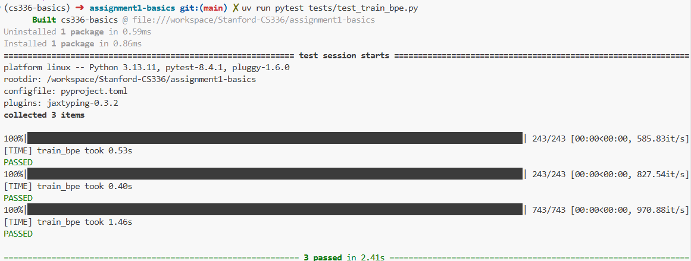
2.7 BPE on TinyStory 在 TinyStory 数据集上训练 BPE 仅需约 5 分钟 ：
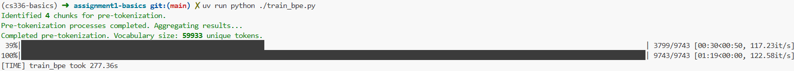
2.8 BPE Tokenizer 有了训练好的 vocab 和 merges，我们可以实现一个完整的 BPE Tokenizer：
1 2 3 4 5 6 7 8 9 10 11 12 13 14 15 16 17 18 19 20 21 22 23 24 25 26 27 28 29 30 31 32 33 34 35 36 37 38 39 40 41 42 43 44 45 46 47 48 49 50 51 52 53 54 55 56 57 58 59 60 61 62 63 64 65 66 67 68 69 70 71 class BPETokenizer : def __init__ ( self, vocab: dict [int , bytes ], merges: list [tuple [bytes , bytes ]], special_tokens: list [str ] | None = None , ): self .vocab = vocab self .merges = merges self .special_tokens = special_tokens if special_tokens else [] self .special_tokens_bytes = [t.encode("utf-8" ) for t in self .special_tokens] self .special_set = set (self .special_tokens_bytes) self .vocab_inv = {v: k for k, v in self .vocab.items()} rank: dict [tuple [int , int ], int ] = {} merge_to_new_id: dict [tuple [int , int ], int ] = {} for r, (a_bytes, b_bytes) in enumerate (self .merges): a_id = self .vocab_inv.get(a_bytes) b_id = self .vocab_inv.get(b_bytes) new_id = self .vocab_inv.get(a_bytes + b_bytes) if a_id is None or b_id is None or new_id is None : continue pair = (a_id, b_id) rank[pair] = r merge_to_new_id[pair] = new_id self .rank = rank self .merge_to_new_id = merge_to_new_id self .eos_token_id = self .vocab_inv.get(b"<|endoftext|>" , None ) def encode (self ): pass def encode_iterable (self ): pass def decode (self ): tokens = b"" .join(self .vocab.get(i, b"\xef\xbf\xbd" ) for i in ids) return tokens.decode("utf-8" , errors="replace" ) @classmethod def from_files ( cls, vocab_filepath: str , merges_filepath: str , special_tokens: list [str ] | str | None = None ) -> "BPETokenizer" : with open (vocab_filepath) as vf: vocab_data = json.load(vf) vocab = {int (i): bytes (v, "latin1" ) for v, i in vocab_data.items()} merges = [] with open (merges_filepath) as mf: next (mf) for line in mf: if line.strip() and not line.startswith("#" ): parts = line.strip().split() if len (parts) == 2 : merges.append((bytes (parts[0 ], "latin1" ), bytes (parts[1 ], "latin1" ))) if isinstance (special_tokens, str ): with open (special_tokens, encoding="utf-8" ) as stf: special_tokens_list = [line.strip() for line in stf if line.strip()] elif isinstance (special_tokens, list ): special_tokens_list = special_tokens else : special_tokens_list = [] return cls(vocab, merges, special_tokens_list)
BPE Tokenizer 核心功能
encode : 把字符串编码成 token IDs 列表encode_iterable : 把字符串列表编码成 token IDs 列表的生成器decode : 把 token IDs 列表解码成字符串
在这里，我们主要介绍 encode 的实现；相比之下，decode 的逻辑相对直接：把 token IDs 依次映射到对应的 bytes，拼接成完整的字节序列，再用 utf-8 解码得到字符串。需要特别注意 b”\xef\xbf\xbd” 的处理——它是 Unicode U+FFFD（替换字符）在 UTF-8 下的字节表示，在 decode 时会对每个 token ID 执行一次查表 self.vocab.get(i, …)：
如果在词表中找到，就取出对应的 bytes；
如果没找到（例如遇到非法/越界的 ID，或词表不完整），就用 b”\xef\xbf\xbd” 作为兜底。
2.8.1 BPETokenizer 中的编码 1 2 3 4 5 6 7 8 9 10 11 12 13 14 15 16 17 18 19 20 def encode (self, text: str ) -> list [int ]: def merge_one_pretoken (ids: list [int ] ) -> list [int ]: pass byte_tokens = self ._pre_tokenize(text) token_ids: list [int ] = [] for btok in byte_tokens: if btok in self .special_set: token_ids.append(self .vocab_inv[btok]) else : ids = [self .vocab_inv[bytes ([b])] for b in btok] token_ids.extend(merge_one_pretoken(ids)) return token_ids
🧩 算法图解：双向链表与惰性删除
为什么不用 Python 的 list.pop()? pop() 操作会导致后续元素前移，时间复杂度是 O ( N ) O(N) O ( N ) 惰性删除 (Lazy Deletion) : 我们使用 alive 数组标记节点是否有效。当合并 (i, j) 时，我们不真的删除内存，只是把 alive[j] = False，并修改 i 的 nxt 指针跨过 j。这保证了每次合并操作的时间复杂度严格为 O ( 1 ) O(1) O ( 1 )
encode 主要完成两件事：
Pre-tokenization : 先粗粒度切分文本对每个 pre-token 做 BPE merge
第一步和我们之前实现的一样，对于第二步，主要的实现方法在 merge_one_pretoken。在这个函数中，我们通过堆（Heap） 和双向链表 来高效实现编码。
首先，我们用数组来模拟双向链表：1 2 3 prev = [-1 ] * n nxt = [-1 ] * n alive = [True ] * n
标记被合并的节点：alive[j] = False
调整指针：nxt[i] = nxt[j]; prev[nxt[j]] = iO ( 1 ) O(1) O ( 1 )
接下来，我们用一个 min heap ，来获取我们最先要实现merge的pair，也就是在训练阶段，出现频率最高的pair。
堆里存 (rank, i)，表示当前位置 i 与其右邻居 nxt[i] 的 pair 在 merge 规则中的优先级（rank 越小越先合并）。每次取出最小 rank 的候选，做一次合并，然后只需要重新检查局部的两个 pair：
1 2 3 4 5 6 7 8 9 10 11 12 13 14 15 heap: list [tuple [int , int ]] = [] def push_if_valid (i: int ): cur_r = None j = nxt[i] if j == -1 or not alive[i] or not alive[j]: cur_r = None else : cur_r = self .rank.get((ids[i], ids[j])) if cur_r is not None : heapq.heappush(heap, (cur_r, i)) for i in range (n): push_if_valid(i)
与之前的heap一样，heap里面的内容会“过期”：因为合并会改变邻接关系，堆中旧条目会过期，所以每次 pop 出来都要验证。
接下来就是遍历这个heap，如果这个heap不是空的，我们就弹出，并且验证：
这段 while heap: 是整个 merge_one_pretoken 的核心：堆里维护“当前可合并的相邻pair”，每次取出 rank 最小（最优先）的候选进行合并，并只更新合并点附近的候选。
1 2 3 4 5 6 7 8 9 10 11 12 13 14 15 16 17 18 19 20 21 22 23 24 25 26 27 28 29 30 while heap: r, i = heapq.heappop(heap) j = nxt[i] if j == -1 or not alive[i] or not alive[j]: continue pair = (ids[i], ids[j]) cur_r = self .rank.get(pair) if cur_r is None or cur_r != r: continue new_id = self .merge_to_new_id.get(pair) if new_id is None : continue ids[i] = new_id alive[j] = False nj = nxt[j] nxt[i] = nj if nj != -1 : prev[nj] = i pi = prev[i] if pi != -1 : push_if_valid(pi) push_if_valid(i)
最后我们只需要把链表结构还原成最终的token序列即可：
在 BPE 合并阶段，我们用 prev / nxt / alive 维护了一个“数组模拟的双向链表”。合并时并不会真的删除 ids 里的元素，而是把被吞掉的位置标记为 alive=False，并通过 nxt 跳过它们。
因此在所有合并完成后，需要把“还活着的节点”按顺序重新收集成一个紧凑的输出序列：
1 2 3 4 5 6 out: list [int ] = [] k = 0 while k != -1 : if alive[k]: out.append(ids[k]) k = nxt[k]
至此，我们已经完成了BPE阶段的所有的内容，接下来就是要训练，并存储我们预先Token好的内容
执行测试命令：1 uv run pytest tests/test_tokenizer.py
测试结果（全部通过）：
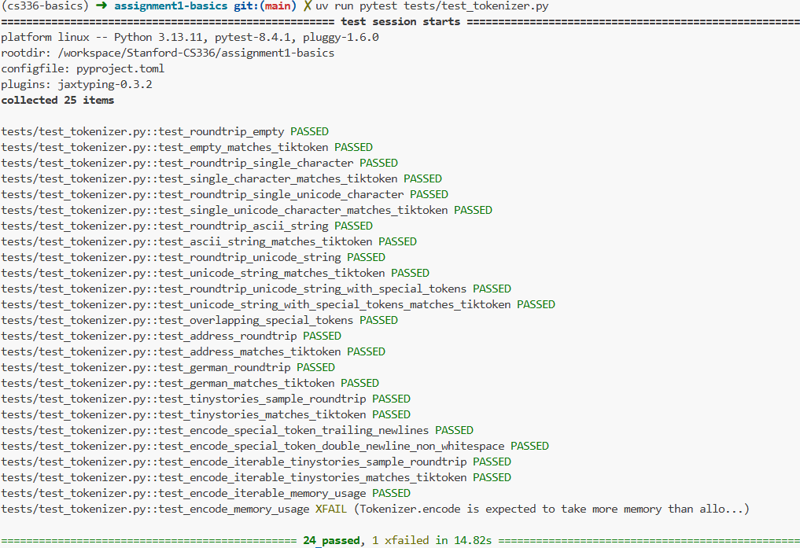
2.9 分词与数据保存 有了 tokenizer.encode() 之后，我们通常会希望把一整个文本文件编码成紧凑的二进制（.bin），方便后续训练时用 np.memmap 之类的方式高效加载，而不是每次都重新分词。
下面这段函数做的事情很简单：按行读取文本 → 把每行编码成 token ids → 用固定 dtype 写入二进制文件。
1 2 3 4 5 6 7 8 9 10 11 12 def encode_file_to_bin (tokenizer, text_path, out_bin_path, dtype=np.uint16 ): total_bytes = os.path.getsize(text_path) with open (text_path, encoding="utf-8" ) as f_in, open (out_bin_path, "wb" ) as f_out: p_bar = tqdm(total=total_bytes, desc="Encoding to binary" , unit="B" , unit_scale=True ) for line in f_in: token_ids = tokenizer.encode(line) arr = np.array(token_ids, dtype=dtype) arr.tofile(f_out) p_bar.update(len (line.encode("utf-8" )))
根据我们的实现，只需要不到30分钟就可以训练完BPE。
Question 1 : 为什么用 uint16 就可以了？
我们通过运行以下代码来完成TinyStory的Tokenization与保存：1 uv run python ./train_bpe.py
在训练完之后，我们可以看到的目录结构：1 2 3 4 5 6 7 datasets/ └── tiny_stories/ ├── eval.bin ├── merges.txt ├── special_tokens.txt ├── train.bin └── vocab.json
2.10 Part 01 总结 总的来说，Part 01 相比大家更期待的「LLM 训练与模型结构」部分，更偏向工程实现与性能优化：通过合适的数据结构与算法设计（例如 heap、索引表、双向链表、并行统计等），我们可以在不改变算法语义的前提下，把 BPE 的训练与推理速度提升一个数量级。
很多读者（包括我自己）会觉得这一部分“又长又绕”，主要原因往往不是内容本身有多难，而是对这些工程细节还不够熟悉：一旦把数据结构的作用、更新范围、以及 stale check 的逻辑串起来，整体会清晰很多。所以如果你第一次读完仍然觉得有点乱，这是非常正常的——请不要气馁。
更重要的是，Tokenization 是训练 LLM 的第一步。真正理解这部分，会直接帮助你在后续更顺畅地掌握：
如何高效地 encode / decode
如何进行数据加载与采样（例如 .bin + memmap）
以及在更进阶的话题里，如何围绕 tokenizer 与序列表示去扩展模型的 context length
下一部分我们将把 tokenizer 生成的二进制数据接入训练 pipeline，进入真正的 model training 环节。
3 Part 02: 语言模型实现 在本部分中，我们将实现一个简单的语言模型，使用我们在第一部分中实现的BPE进行tokenization。我们将使用PyTorch来定义和训练模型。
下图是Transformer Language Model的整体架构概览：
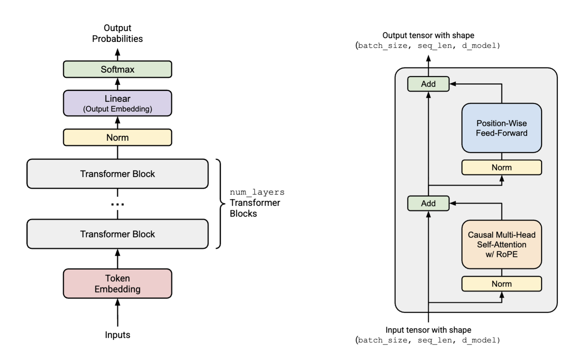
3.1 线性层（Linear Module） Linear Module 是基本所有神经网络的起始点，它的定义如下：y = W x (1) y = Wx \tag{1} y = W x ( 1 ) W ∈ R d o u t × d i n , x ∈ R d i n × 1 , y ∈ R d o u t × 1 W \in \mathbb{R}^{d_{out} \times d_{in}},\ x \in \mathbb{R}^{d_{in} \times 1},\ y \in \mathbb{R}^{d_{out} \times 1} W ∈ R d o u t × d in , x ∈ R d in × 1 , y ∈ R d o u t × 1
Note
我们将weight的shape设为 (in_features, out_features)，这样在 forward 的时候，可以直接使用 @ 运算符进行矩阵乘法，代码更简洁。
我们将bias设为可选项，默认不使用bias，这样可以更好地模拟Transformer中的Linear Layer。
1 2 3 4 5 6 7 8 9 10 11 12 13 14 15 16 17 18 19 20 21 22 23 24 25 26 27 28 29 30 class Linear (nn.Module): def __init__ ( self, in_features, out_features, device: torch.device | None = None , dtype: torch.dtype | None = None , bias: bool = False , ): super ().__init__() self .in_features = in_features self .out_features = out_features self .weight = nn.Parameter(torch.empty((in_features, out_features), device=device, dtype=dtype)) self .bias = nn.Parameter(torch.empty(out_features, device=device, dtype=dtype)) if bias else None self ._init_weight() def forward (self, x ): o = x @ self .weight if self .bias is not None : o = o + self .bias return o def _init_weight (self ): mean = 0.0 std = 1.0 / (2 * (self .in_features + self .out_features) ** 0.5 ) torch.nn.init.trunc_normal_(self .weight, mean=mean, std=std, a=-3 * std, b=3 * std)
⚙️ PyTorch 深度解析：nn.Parameter
为什么是 nn.Parameter 而不是 torch.Tensor? 参数列表 中。这意味着：
调用 model.parameters() 时会包含它。
优化器（Optimizer）更新时会更新它。
保存模型（state_dict）时会保存它。
Truncated Normal (截断正态分布) 初始化 :3 σ 3\sigma 3 σ
其中 _init_weight() 是初始化的方法，在Assignment 1 中为：N ( μ = 0 , σ 2 = 2 d i n + d o u t ) truncated at [ − 3 σ , 3 σ ] \mathcal{N} \left( \mu = 0, \sigma^2 = \frac{2}{d_{in} + d_{out}} \right) \quad \text{truncated at} [-3\sigma, 3\sigma] N ( μ = 0 , σ 2 = d in + d o u t 2 ) truncated at [ − 3 σ , 3 σ ]
这种初始化的方式是最常见的，也是比较robust的，当然，大家还可以尝试不同的初始化的方式，例如Xavier-initialization, Kaiming-initialization等。
3.2 嵌入模型（Embedding Model） 记得我们在前面第一章就实现了BPE的Tokenization，回顾一下：
通过代码，我们可以定义Embedding Layer：
1 2 3 4 5 6 7 8 9 10 11 12 13 14 15 16 17 18 19 20 21 22 23 24 class Embedding (nn.Module): def __init__ ( self, num_embeddings: int , embedding_dim: int , device: torch.device | None = None , dtype: torch.dtype | None = None , ): super ().__init__() self .num_embeddings = num_embeddings self .embedding_dim = embedding_dim self .weight = nn.Parameter(torch.empty((num_embeddings, embedding_dim), device=device, dtype=dtype)) self ._init_weight() def forward (self, x: torch.Tensor ) -> torch.Tensor: B, L = x.shape out = x.reshape(-1 ) out = self .weight.index_select(0 , out) out = out.reshape(B, L, self .embedding_dim) return out
🧐 深度理解：Embedding 本质上是什么？
虽然我们在代码中写的是 out = self.weight.index_select(0, out)，但从数学角度看，Embedding 层等价于一个没有 Bias 的 Linear 层，输入是 One-Hot 向量 。
想象输入 token ID 是 i i i
将其转为 One-Hot 向量 e i e_i e i i i i
计算 e i × W e_i \times W e i × W
结果正是权重矩阵 W W W i i i
关于 reshape :
很简单的也很直观，它的权重初始化的方式为：N ( μ = 0 , σ 2 = 1 ) truncated at [ − 3 , 3 ] \mathcal{N} \left( \mu = 0, \sigma^2 = 1 \right) \quad \text{truncated at} [-3, 3] N ( μ = 0 , σ 2 = 1 ) truncated at [ − 3 , 3 ]
Note
3.3 RMS归一化（RMS-Norm） 在现代的Language Model中，常见的Normalization的方法是 RMS-Norm(Zhang and Senrich 2019)，其数学定义如下：RMSNorm ( a i ) = a i RMS ( a ) g i \text{RMSNorm}(a_i) = \frac{a_i}{\text{RMS}(a)} g_i RMSNorm ( a i ) = RMS ( a ) a i g i where RMS ( a ) = 1 d model ∑ i = 1 d model a i 2 + ϵ \text{where}\quad \text{RMS}(a) = \sqrt{\frac{1}{d_{\text{model}}} \sum_{i=1}^{d_{\text{model}}} a_i^2 + \epsilon} where RMS ( a ) = d model 1 i = 1 ∑ d model a i 2 + ϵ
其中 g g g a a a ϵ \epsilon ϵ
🆚 面试必考：RMSNorm vs LayerNorm
LayerNorm : LN ( x ) = x − μ σ ⋅ γ + β \text{LN}(x) = \frac{x - \mu}{\sigma} \cdot \gamma + \beta LN ( x ) = σ x − μ ⋅ γ + β μ \mu μ σ \sigma σ RMSNorm : RMS ( x ) = x RMS ( x ) ⋅ γ \text{RMS}(x) = \frac{x}{\text{RMS}(x)} \cdot \gamma RMS ( x ) = RMS ( x ) x ⋅ γ 不减均值 ，仅根据均方根进行缩放。
为什么要用 RMSNorm?
计算效率 : 少了计算均值和减均值的步骤，在大模型训练中能节省可观的计算开销。效果相当 : 研究表明，LayerNorm 的成功主要归功于缩放（Rescaling）带来的梯度稳定性，平移（Re-centering）贡献不大。Llama/GPT-3 的选择 : 它是当前主流 LLM 的标配。
实现RMS-Norm的方式也很简单，不过有一个需要注意的点就是：如果我们用了Mixed Precision Training，当用 sqrt() 时，可能会导致Underflow。为了避免这一点，在训练的时候，我们需要先将 activation upcast到 float32，结束的时候再返回原来的数据类型。具体的请看代码：
1 2 3 4 5 6 7 8 9 10 11 12 13 14 15 16 17 18 19 20 21 22 23 24 25 26 27 28 class RMSNorm (nn.Module): def __init__ ( self, d_model: int , eps: float = 1e-5 , device: torch.device | None = None , dtype: torch.dtype | None = None , ): super ().__init__() self .d_model = d_model self .eps = eps self .weight = nn.Parameter(torch.ones(d_model, device=device, dtype=dtype)) def _rms (self, x: torch.Tensor ) -> torch.Tensor: return torch.sqrt(torch.mean(x**2 , dim=-1 , keepdim=True ) + self .eps) def forward (self, x: torch.Tensor ) -> torch.Tensor: input_dtype = x.dtype x = x.to(torch.float32) rms = self ._rms(x) x_normed = x / rms return (x_normed * self .weight).to(input_dtype)
当然，Normalization的位置也是很有讲究的，在现代的LM中，通常用Pre-Norm，这一部分，等我们介绍完了所有的模块之后再来介绍。
3.4 逐点前馈网络（PointWise Feed Forward Network） 在原始Transformer (Vaswani et al. 2023)里，FFN 是一个非常经典的两层结构：Linear → ReLU → Linear，并且中间隐层维度通常取 d_ff = 4 * d_model。但到了现代大语言模型（例如 Llama 3, Qwen 2.5），FFN 的设计出现了两个几乎“标配”的变化：
换激活函数（gating）
引入门控（gating）机制。
一个典型代表就是 SwiGLU：它把 SiLU/Swish 的平滑激活和 GLU 的门控相乘结合起来，并且很多实现会像 PaLM, LLaMA 一样去掉线性层（bias）更简洁，也更贴近主流训练配方。
先看 SiLU（也叫 Swish），定义很简单：SiLU ( x ) = x ⋅ σ ( x ) = x 1 + e − x (2) \text{SiLU}(x) = x \cdot \sigma(x) = \frac{x}{1 + e^{-x}} \tag{2} SiLU ( x ) = x ⋅ σ ( x ) = 1 + e − x x ( 2 ) GLU ( x , W 1 , W 2 ) = σ ( W 1 x ) ⊙ ( W 2 x ) (3) \text{GLU}(x, W_1, W_2) = \sigma(W_1 x) \odot (W_2 x) \tag{3} GLU ( x , W 1 , W 2 ) = σ ( W 1 x ) ⊙ ( W 2 x ) ( 3 ) FFN ( x ) = W 2 ( SiLU ( W 1 x ) ⊙ ( W 3 x ) ) (4) \text{FFN}(x) = W_2 \left( \text{SiLU}(W_1 x) \odot (W_3 x) \right) \tag{4} FFN ( x ) = W 2 ( SiLU ( W 1 x ) ⊙ ( W 3 x ) ) ( 4 ) x ∈ R d model , W 1 , W 3 ∈ R d ff × d model , W 2 ∈ R d model × d ff x \in \mathbb{R}^{d_{\text{model}}},\ W_1, W_3 \in \mathbb{R}^{d_{\text{ff}} \times d_{\text{model}}},\ W_2 \in \mathbb{R}^{d_{\text{model}} \times d_{\text{ff}}} x ∈ R d model , W 1 , W 3 ∈ R d ff × d model , W 2 ∈ R d model × d ff d ff = 8 3 d model d_{\text{ff}} = \frac{8}{3} d_{\text{model}} d ff = 3 8 d model
也就是说，相比早期的 4x，现代 LLM 经常用一个更“性价比”更好的宽度配合门控结构。Shazeer (Shazeer 2020) 的实验也表明，SwiGLU 往往能在语言建模任务上优于 ReLU 或仅 SiLU（无门控）的基线——当然，最终还是要回到实验：在后续对比不同 FFN 变体时，你会更直观地看到这些设计在 loss、收敛速度与最终指标上的差异。
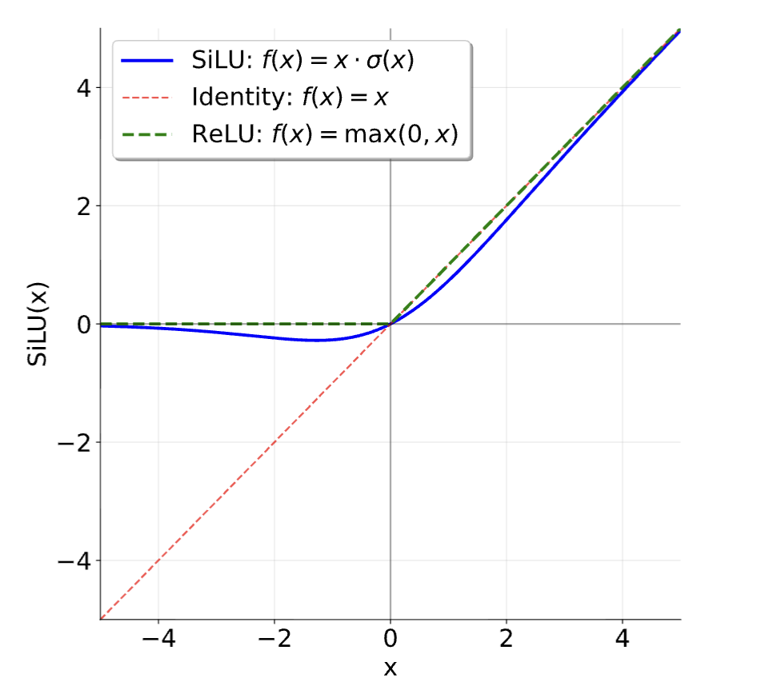
代码的实现还是很简单的：
1 2 3 4 5 6 7 8 9 10 11 12 13 14 15 16 17 18 19 20 21 22 23 24 def silu (x: torch.Tensor ) -> torch.Tensor: return x * torch.sigmoid(x) class FFN (nn.Module): def __init__ ( self, d_model: int , d_ff: int , device: torch.device | None = None , dtype: torch.dtype | None = None , ): super ().__init__() from cs336_basics.modules.linear import Linear self .up = Linear(d_model, d_ff, device=device, dtype=dtype) self .down = Linear(d_ff, d_model, device=device, dtype=dtype) self .gate = Linear(d_model, d_ff, device=device, dtype=dtype) def forward (self, x: torch.Tensor ) -> torch.Tensor: return self .down(silu(self .up(x)) * self .gate(x))
3.5 RoPE Transformer 本身对序列的顺序并不敏感，因此需要把位置信息注入到注意力机制里。除了常见的绝对位置编码（absolute embedding），现代 LLM 更常用的一类方法是 Rotary Position Embeddings (RoPE) (Su et al. 2023)：它不是把位置向量“加到”embedding 上，而是对 Q/K 向量做维度成对的旋转 ，从而让注意力天然具备相对位置信息。
RoPE 的思想也很简单：对第 i i i q ( i ) = W q x ( i ) ∈ R d (5) q^{(i)} = W_q x^{(i)} \in \mathbb{R}^d \tag{5} q ( i ) = W q x ( i ) ∈ R d ( 5 ) R i R_i R i q ′ ( i ) = R i q ( i ) (6) q'^{(i)} = R_i q^{(i)} \tag{6} q ′ ( i ) = R i q ( i ) ( 6 ) R i R_i R i ( q 1 , q 2 ) , ( q 3 , q 4 ) , … (q_1, q_2), (q_3, q_4), \dots ( q 1 , q 2 ) , ( q 3 , q 4 ) , … θ i , k \theta_{i,k} θ i , k
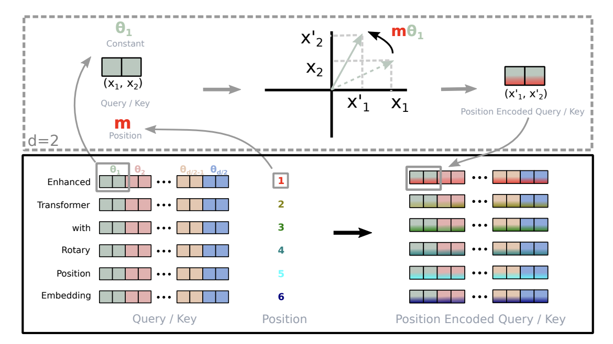
接下来，我们来看如何定义旋转角度 θ i , k \theta_{i,k} θ i , k R i R_i R i
定义旋转角度 θ i , k \theta_{i,k} θ i , k 根据RoPE(Su et al. 2023) 的设定，对第 k k k k ∈ { 1 , … , d / 2 } k \in \{1,\dots,d/2\} k ∈ { 1 , … , d /2 } θ i , k = i ⋅ Θ − 2 k − 2 d (7) \theta_{i,k} = i \cdot \Theta^{-\frac{2k-2}{d}} \tag{7} θ i , k = i ⋅ Θ − d 2 k − 2 ( 7 ) Θ \Theta Θ Θ \Theta Θ k k k 1 10000 2 k − 2 d \frac{1}{10000^{\frac{2k-2}{d}}} 1000 0 d 2 k − 2 1
1 inv_freq = 1.0 / (10000.0 ** (torch.arange(0 , d_model, 2 , dtype=torch.float ) / d_model))
直觉上：
不同维度对应不同“旋转频率”（像一组不同波长的正弦/余弦）
位置越靠后，旋转角度越大，用于编码更长距离的相对位置关系
最终让注意力可以通过 Q/K 的相对旋转，编码相对位置信息
定义旋转块 R k i R_k^i R k i 其中，每一对维度 ( q 2 k − 1 , q 2 k ) (q_{2k-1}, q_{2k}) ( q 2 k − 1 , q 2 k ) 2 × 2 2 \times 2 2 × 2 R k i = [ cos ( θ i , k ) − sin ( θ i , k ) sin ( θ i , k ) cos ( θ i , k ) ] (8) R_k^i = \begin{bmatrix} \cos(\theta_{i,k}) & -\sin(\theta_{i,k}) \\ \sin(\theta_{i,k}) & \cos(\theta_{i,k}) \end{bmatrix} \tag{8} R k i = [ cos ( θ i , k ) sin ( θ i , k ) − sin ( θ i , k ) cos ( θ i , k ) ] ( 8 )
整体旋转矩阵 R i R_i R i 整体 R i R_i R i d × d d \times d d × d d / 2 d/2 d /2 2 × 2 2 \times 2 2 × 2 R i = [ R 1 i 0 0 ⋯ 0 0 R 2 i 0 ⋯ 0 0 0 R 3 i ⋯ 0 ⋮ ⋮ ⋮ ⋱ ⋮ 0 0 0 ⋯ R d / 2 i ] (9) R_i = \begin{bmatrix}
R_1^i & 0 & 0 & \cdots & 0 \\
0 & R_2^i & 0 & \cdots & 0 \\
0 & 0 & R_3^i & \cdots & 0 \\
\vdots & \vdots & \vdots & \ddots & \vdots \\
0 & 0 & 0 & \cdots & R_{d/2}^i
\end{bmatrix} \tag{9} R i = R 1 i 0 0 ⋮ 0 0 R 2 i 0 ⋮ 0 0 0 R 3 i ⋮ 0 ⋯ ⋯ ⋯ ⋱ ⋯ 0 0 0 ⋮ R d /2 i ( 9 )
这样，对于第 j j j k ( j ) k^{(j)} k ( j ) k ′ ( j ) = R j k ( j ) (10) k'^{(j)} = R_j k^{(j)} \tag{10} k ′ ( j ) = R j k ( j ) ( 10 ) q ′ ( i ) ⋅ k ′ ( j ) q'^{(i)} \cdot k'^{(j)} q ′ ( i ) ⋅ k ′ ( j ) 相对旋转 的形式体现出来，这也是 RoPE 在长上下文建模中非常常用的原因之一。q ′ ( i ) ⋅ k ′ ( j ) = ( R i q ( i ) ) ⋅ ( R j k ( j ) ) = q ( i ) ⋅ ( R i T R j k ( j ) ) (11) q'^{(i)} \cdot k'^{(j)} = \left(R_i q^{(i)}\right) \cdot \left(R_j k^{(j)}\right) = q^{(i)} \cdot \left(R_i^T R_j k^{(j)}\right) \tag{11} q ′ ( i ) ⋅ k ′ ( j ) = ( R i q ( i ) ) ⋅ ( R j k ( j ) ) = q ( i ) ⋅ ( R i T R j k ( j ) ) ( 11 )
3.5.1 RoPE 的实现细节 RoPE 层没有可学习参数。为了效率，通常会：
预计算所有 cos ( θ i , k ) \cos(\theta_{i,k}) cos ( θ i , k ) sin ( θ i , k ) \sin(\theta_{i,k}) sin ( θ i , k )
作为 buffer 缓存在模块里，而不是 nn.Parameter（因为它们是固定的）
甚至可以让所有 Transformer 层共享同一个 RoPE 模块（跨层复用缓存）
实现上常用：
self.register_buffer(…, persistent=False) 来保存预计算好的 sin/cos（不进 state_dict 或不作为训练参数）
只要序列长度不变，这些值可以在不同 batch、不同 layer 间复用
不过，在实际实现 RoPE 旋转时，我们并不需要显式构建大块对角矩阵 R i R_i R i ( x 2 k − 1 , x 2 k ) (x_{2k-1},x_{2k}) ( x 2 k − 1 , x 2 k ) R θ , m d x = [ x 1 x 2 x 3 x 4 ⋮ x d − 1 x d ] ⊗ [ cos ( m θ 1 ) cos ( m θ 1 ) cos ( m θ 2 ) cos ( m θ 2 ) ⋮ cos ( m θ d / 2 ) cos ( m θ d / 2 ) ] + [ − x 2 x 1 − x 4 x 3 ⋮ − x d x d − 1 ] ⊗ [ sin ( m θ 1 ) sin ( m θ 1 ) sin ( m θ 2 ) sin ( m θ 2 ) ⋮ sin ( m θ d / 2 ) sin ( m θ d / 2 ) ] = [ x 1 cos ( m θ 1 ) − x 2 sin ( m θ 1 ) x 2 cos ( m θ 1 ) + x 1 sin ( m θ 1 ) x 3 cos ( m θ 2 ) − x 4 sin ( m θ 2 ) x 4 cos ( m θ 2 ) + x 3 sin ( m θ 2 ) ⋮ x d − 1 cos ( m θ d / 2 ) − x d sin ( m θ d / 2 ) x d cos ( m θ d / 2 ) + x d − 1 sin ( m θ d / 2 ) ]
R_{\theta,m}^d \mathbf{x} = \begin{bmatrix} x_1 \\ x_2 \\ x_3 \\ x_4 \\ \vdots \\ x_{d-1} \\ x_d \end{bmatrix} \otimes \begin{bmatrix} \cos(m\theta_1) \\ \cos(m\theta_1) \\ \cos(m\theta_2) \\ \cos(m\theta_2) \\ \vdots \\ \cos(m\theta_{d/2}) \\ \cos(m\theta_{d/2}) \end{bmatrix} + \begin{bmatrix} -x_2 \\ x_1 \\ -x_4 \\ x_3 \\ \vdots \\ -x_d \\ x_{d-1} \end{bmatrix} \otimes \begin{bmatrix} \sin(m\theta_1) \\ \sin(m\theta_1) \\ \sin(m\theta_2) \\ \sin(m\theta_2) \\ \vdots \\ \sin(m\theta_{d/2}) \\ \sin(m\theta_{d/2}) \end{bmatrix} = \begin{bmatrix} x_1 \cos(m\theta_1) - x_2 \sin(m\theta_1) \\ x_2 \cos(m\theta_1) + x_1 \sin(m\theta_1) \\ x_3 \cos(m\theta_2) - x_4 \sin(m\theta_2) \\ x_4 \cos(m\theta_2) + x_3 \sin(m\theta_2) \\ \vdots \\ x_{d-1} \cos(m\theta_{d/2}) - x_d \sin(m\theta_{d/2}) \\ x_d \cos(m\theta_{d/2}) + x_{d-1} \sin(m\theta_{d/2}) \end{bmatrix}
R θ , m d x = x 1 x 2 x 3 x 4 ⋮ x d − 1 x d ⊗ cos ( m θ 1 ) cos ( m θ 1 ) cos ( m θ 2 ) cos ( m θ 2 ) ⋮ cos ( m θ d /2 ) cos ( m θ d /2 ) + − x 2 x 1 − x 4 x 3 ⋮ − x d x d − 1 ⊗ sin ( m θ 1 ) sin ( m θ 1 ) sin ( m θ 2 ) sin ( m θ 2 ) ⋮ sin ( m θ d /2 ) sin ( m θ d /2 ) = x 1 cos ( m θ 1 ) − x 2 sin ( m θ 1 ) x 2 cos ( m θ 1 ) + x 1 sin ( m θ 1 ) x 3 cos ( m θ 2 ) − x 4 sin ( m θ 2 ) x 4 cos ( m θ 2 ) + x 3 sin ( m θ 2 ) ⋮ x d − 1 cos ( m θ d /2 ) − x d sin ( m θ d /2 ) x d cos ( m θ d /2 ) + x d − 1 sin ( m θ d /2 )
代码的实现也很简单：1 2 3 4 5 6 7 8 9 10 11 12 13 14 15 16 17 18 19 20 21 22 23 24 25 26 27 28 29 30 31 32 33 34 35 36 37 class RoPEEmbedding (nn.Module): def __init__ ( self, theta: float , d_k: int , max_seq_len: int , device: torch.device | None = None , ): super ().__init__() self .theta = theta self .d_k = d_k self .max_seq_len = max_seq_len inv_freq = 1.0 / (theta ** (torch.arange(0 , d_k, 2 , device=device, dtype=torch.float32) / d_k)) self .register_buffer("inv_freq" , inv_freq, persistent=False ) def _rotate_half (self, x ): x = einops.rearrange(x, "... (d j) -> ... d j" , j=2 ) x1, x2 = x.unbind(dim=-1 ) return einops.rearrange(torch.stack((-x2, x1), dim=-1 ), "... d j-> ... (d j)" ) def forward (self, x: torch.Tensor, token_positions: int | None = None ) -> torch.Tensor: if token_positions is None : seq_len = x.shape[-2 ] token_positions = torch.arange(seq_len, device=x.device) token_positions = token_positions.unsqueeze(0 ) theta = torch.einsum("...i , j -> ... i j" , token_positions, self .inv_freq) cos = torch.cos(theta).repeat_interleave(2 , dim=-1 ) sin = torch.sin(theta).repeat_interleave(2 , dim=-1 ) x_rotated = (x * cos) + (self ._rotate_half(x) * sin) return x_rotated
🛠️ 工具箱：einops 与 Tensor 操作详解
代码中的 einops.rearrange(x, “… (d j) -> … d j”, j=2) 是极其强大的张量重排工具：
…: 代表前面任意维度的 Batch 和 Sequence Length，保持不变。
(d j): 代表输入的最后一维 head_dim。
-> … d j: 意味着我们将最后一维拆分为两维，其中 j=2。
目的 : 将向量中相邻的两个元素 ( x 2 k , x 2 k + 1 ) (x_{2k}, x_{2k+1}) ( x 2 k , x 2 k + 1 ) cos \cos cos sin \sin sin
x.unbind(dim=-1): 则是沿着最后一个维度将张量“切片”，如果不使用 einops，这相当于把配对的偶数位和奇数位数字分开。
Note 1 2 3 4 5 6 7 8 9 10 11 12 13 14 15 16 17 def rotate_half (x: torch.Tensor ) -> torch.Tensor: x1, x2 = x.chunk(2 , dim=-1 ) return torch.cat((-x2, x1), dim=-1 ) def forward (self, x: torch.Tensor, token_positions: int | None = None ) -> torch.Tensor: if token_positions is None : seq_len = x.shape[-2 ] token_positions = torch.arange(seq_len, device=x.device) token_positions = token_positions.unsqueeze(0 ) theta = torch.einsum("...i , j -> ... i j" , token_positions, self .inv_freq) theta = torch.cat([theta, theta], dim=-1 ) cos = torch.cos(theta) sin = torch.sin(theta) x_rotated = (x * cos) + (self ._rotate_half(x) * sin) return x_rotated
R i R_i R i
这对应的就是“二维旋转里那个把 ( a , b ) (a,b) ( a , b ) ( − b , a ) (-b,a) ( − b , a ) cos / sin \cos/\sin cos / sin
这两种只是坐标重排（permutation）不同：存在一个置换矩阵 P P P R half-rotate = P T R adjacent P R_{\text{half-rotate}} = P^T R_{\text{adjacent}} P R half-rotate = P T R adjacent P
当然，除了上面的这种形式，我们还可以通过构造Complex Number的形式来完成Vector的旋转，在这里就不展开了。有兴趣的同学可以参考Llama的inference Code 。
3.6 多头注意力机制（Multi-Headed Attention） 接下来，我们来实现Transformer中，最重要也是相对比较复杂的部分，Attention，我们先来看看什么是Scaled Dot Product Attention。
3.6.1 缩放点积注意力机制（Scaled Dot-Product Attention） 在Transformer(Vaswani et al. 2023)中，最核心的计算之一就是 scaled dot-product attention 。它可以看作：
计算 query 和 key 的相似度（打分）。
把这些分数（logits）归一化成概率分布。
最后用这个分布对 value 做加权求和。
首先我们来看如何将分数（logits）归一化为概率分布，在这里我们需要用到的就是 Softmax 函数。
3.6.1.1 Softmax 函数 Softmax 的定义是：softmax ( v ) i = exp ( v i ) ∑ j exp ( v j ) (12) \text{softmax}(v)_i = \frac{\exp(v_i)}{\sum_j \exp(v_j)} \tag{12} softmax ( v ) i = ∑ j exp ( v j ) exp ( v i ) ( 12 )
直觉上，softmax 会把任意实数向量变成一个非负、和为 1 的分布，因此常用于注意力里的“权重归一化”。然而，直接算 softmax 有一个数值稳定问题 ：当 v i v_i v i exp ( v i ) \exp(v_i) exp ( v i ) c c c softmax ( v ) = softmax ( v + c ) . (13) \text{softmax}(v) = \text{softmax}(v + c). \tag{13} softmax ( v ) = softmax ( v + c ) . ( 13 ) exp ( c ) \exp(c) exp ( c ) c = − max v i , (14) c = -\max v_i, \tag{14} c = − max v i , ( 14 ) exp ( ⋅ ) \exp(\cdot) exp ( ⋅ ) softmax ( v ) i = exp ( v i − max ( v ) ) ∑ j exp ( v j − max ( v ) ) . (15) \text{softmax}(v)_i = \frac{\exp(v_i - \max(v))}{\sum_j \exp(v_j - \max(v))}. \tag{15} softmax ( v ) i = ∑ j exp ( v j − max ( v )) exp ( v i − max ( v )) . ( 15 )
1 2 3 4 5 6 7 8 9 10 11 def stable_softmax ( logits: torch.Tensor, dim: int = -1 , max_logits = torch.max (logits, dim=dim, keepdim=True ).values exp_logits = torch.exp(logits - max_logits) sum_exp_logits = torch.sum (exp_logits, dim=dim, keepdim=True ) softmax = exp_logits / sum_exp_logits return softmax
3.6.1.2 缩放点积注意力机制（Scaled Dot Product Attention） 接着，我们来看Scaled Dot-Product Attention，其数学定义为：Attention ( Q , K , V ) = softmax ( Q K T d k ) V , (16) \text{Attention}(Q, K, V) = \text{softmax}\left(\frac{Q K^T}{\sqrt{d_k}}\right) V, \tag{16} Attention ( Q , K , V ) = softmax ( d k Q K T ) V , ( 16 )
其中：
Q ∈ R n × d k Q \in \mathbb{R}^{n \times d_k} Q ∈ R n × d k n n n K ∈ R m × d k K \in \mathbb{R}^{m \times d_k} K ∈ R m × d k m m m V ∈ R m × d v V \in \mathbb{R}^{m \times d_v} V ∈ R m × d v m m m
这里的 1 d k \frac{1}{\sqrt{d_k}} d k 1 d k d_k d k
We suspect that for large values of d k d_k d k 1 d k \frac{1}{\sqrt{d_k}} d k 1 Attention Is All You Need , p.4
我们来看下面的图，展示了不同缩放因子对 softmax 分布的影响：
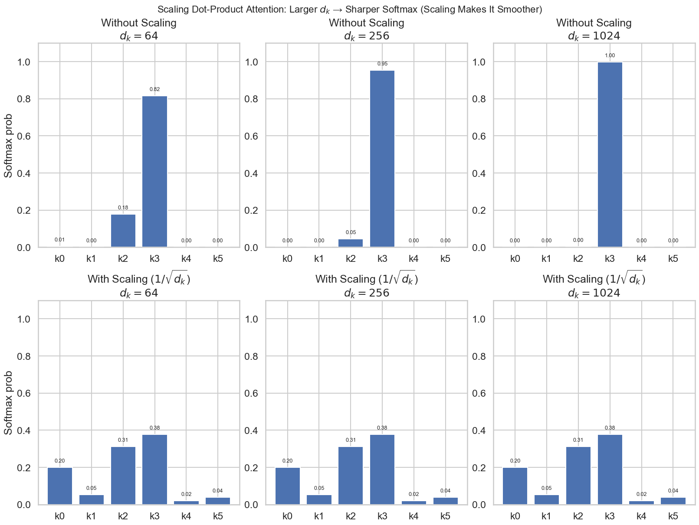
接下来，我们来看代码实现：1 2 3 4 5 6 7 8 9 10 11 12 13 14 15 def scaled_dot_product_attention ( query: torch.Tensor, key: torch.Tensor, value: torch.Tensor, mask: torch.Tensor | None = None , d_k = query.size(-1 ) scores = torch.matmul(query, key.transpose(-2 , -1 )) / (d_k**0.5 ) if mask is not None : scores = scores.masked_fill(mask == 0 , float ("-inf" )) attn_weights = stable_softmax(scores, dim=-1 ) output = torch.matmul(attn_weights, value) return output
🧪 核心原理：为什么要除以 d k \sqrt{d_k} d k
假设 Q Q Q K K K Q ⋅ K T = ∑ i = 1 d k q i k i Q \cdot K^T = \sum_{i=1}^{d_k} q_i k_i Q ⋅ K T = ∑ i = 1 d k q i k i d k d_k d k
如果不缩放，当 d k d_k d k
将这些大数值输入 Softmax，会导致梯度消失 。因为 Softmax 在输入值极大或极小时，梯度趋近于 0（分布变得像 One-Hot 一样尖锐）。
除以 d k \sqrt{d_k} d k
在这里，我们看到有一个 Masking，这个 mask 的作用是什么呢？
3.6.1.3 因果掩码（Causal Masking） 在很多场景下我们需要 mask（例如 causal LM 中不允许看未来 token，或 padding 位置不参与注意力）。mask 的形状是：M = [ True False … False True True … False ⋮ ⋮ ⋱ ⋮ True True … True ]
M =
\begin{bmatrix}
\text{True} & \text{False} & \dots & \text{False} \\
\text{True} & \text{True} & \dots & \text{False} \\
\vdots & \vdots & \ddots & \vdots \\
\text{True} & \text{True} & \dots & \text{True}
\end{bmatrix}
M = True True ⋮ True False True ⋮ True … … ⋱ … False False ⋮ True
注意这里有个小约定（容易混淆）：
True 表示允许 attend（信息流通）False 表示不允许 attend（需要屏蔽）
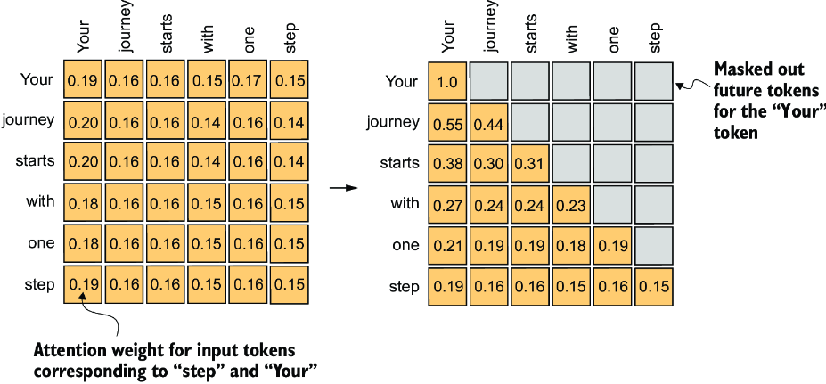
计算上，我们不会真的删掉被屏蔽的 key/value（那样效率低），而是在 softmax 之前的打分矩阵上动手脚：对所有 mask 为 False 的位置加上 − ∞ -\infty − ∞ S i j = { S i j , M i j = True − ∞ , M i j = False (17)
S_{ij} =
\begin{cases}
S_{ij}, & M_{ij} = \text{True} \\
-\infty, & M_{ij} = \text{False}
\end{cases}
\tag{17}
S ij = { S ij , − ∞ , M ij = True M ij = False ( 17 ) exp ( − ∞ ) = 0 (18) \exp(-\infty) = 0 \tag{18} exp ( − ∞ ) = 0 ( 18 ) Attention ( Q , K , V ) = softmax ( S ) V (19) \text{Attention}(Q, K, V) = \text{softmax}(S) V \tag{19} Attention ( Q , K , V ) = softmax ( S ) V ( 19 )
在语言模型里，token i i i i i i
用 torch.triu（上三角）构造 False 区域，
用广播比较 j < i j < i j < i
1 2 3 4 5 6 7 8 9 10 11 12 13 14 15 16 17 18 19 20 21 22 23 24 25 def _create_causal_mask (self, seq_len: int , device: torch.device ) -> torch.Tensor: mask = torch.tril(torch.ones(seq_len, seq_len, device=device)).bool () return mask.unsqueeze(0 ).unsqueeze(0 ) def _create_causal_mask (self, seq_len: int , device: torch.device ) -> torch.Tensor: positions = torch.arange(seq_len, device=device) mask = positions.unsqueeze(0 ) <= positions.unsqueeze(1 ) return mask.unsqueeze(0 ).unsqueeze(0 ) def scaled_dot_product_attention ( query: torch.Tensor, key: torch.Tensor, value: torch.Tensor, mask: torch.Tensor | None = None , ... if mask is not None : scores = scores.masked_fill(mask == 0 , float ("-inf" )) ...
Attention 的本质： 数值稳定性 （减最大值）和 masking （softmax 前加 − ∞ -\infty − ∞
3.6.2 多头注意力机制（Multi Headed Attention） 在完成了单个Attention模块之后，我们看看这些如何组合在一起，实现我们的Multi Headed Attention。
Instead of performing a single attention function with d model d_{\text{model}} d model h h h d k d_k d k d k d_k d k d v d_v d v Attention Is All You Need , p.4
Multi-head attention 的定义是：MultiHead ( Q , K , V ) = Concat ( head 1 , … , head h ) (20) \text{MultiHead}(Q, K, V) = \text{Concat}(\text{head}_1, \dots, \text{head}_h) \tag{20} MultiHead ( Q , K , V ) = Concat ( head 1 , … , head h ) ( 20 ) head i = Attention ( Q i , K i , V i ) (21) \text{head}_i = \text{Attention}(Q_i, K_i, V_i) \tag{21} head i = Attention ( Q i , K i , V i ) ( 21 )
这里的 Q i , K i , V i Q_i, K_i, V_i Q i , K i , V i Q , K , V Q, K, V Q , K , V i i i d k d_k d k d v d_v d v
在 self-attention 场景中，Q , K , V Q, K, V Q , K , V x x x MultiHeadSelfAttention ( x ) = W O ⋅ MultiHead ( W Q x , W K x , W V x ) (22) \text{MultiHeadSelfAttention}(x) = W_O \cdot \text{MultiHead}(W_Q x, W_K x, W_V x) \tag{22} MultiHeadSelfAttention ( x ) = W O ⋅ MultiHead ( W Q x , W K x , W V x ) ( 22 )
可学习参数为：W Q ∈ R h d k × d model , W K ∈ R h d k × d model , W V ∈ R h d v × d model , W O ∈ R d model × h d v . (23) W_Q \in \mathbb{R}^{h d_k \times d_{\text{model}}},\ W_K \in \mathbb{R}^{h d_k \times d_{\text{model}}},\ W_V \in \mathbb{R}^{h d_v \times d_{\text{model}}},\ W_O \in \mathbb{R}^{d_{\text{model}} \times h d_v}. \tag{23} W Q ∈ R h d k × d model , W K ∈ R h d k × d model , W V ∈ R h d v × d model , W O ∈ R d model × h d v . ( 23 )
一个很重要的工程视角是：因为后面会把输出维度 reshape 成 (h, head_dim)，所以你可以把 W Q , W K , W V W_Q, W_K, W_V W Q , W K , W V
3.6.3 张量形状变换 在继续完成 MHA 之前，我们先理清楚 shape 变化 。假设：
输入 x x x
head 数量是 num_heads
每个 head 的维度是 d k = d model / / num_heads d_k = d_{\text{model}} // \text{num\_heads} d k = d model // num_heads
那么，计算 Q , K , V Q, K, V Q , K , V
先用 view 把最后一维拆成 (num_heads, d_k)，变成 (batch_size, seq_len, num_heads, d_k)
再用 transpose 把 num_heads 维度移到第二维，变成 (batch_size, num_heads, seq_len, d_k)
之后，我们可以计算它们的 scores：1 Q (batch_size, seq_len, num_heads, d_k) @ K^T (batch_size, num_heads, d_k, seq_len) -> Score (batch_size, num_heads, seq_len, seq_len)
softmax 和 mask 不会改变 shape，最后对 V 做加权求和后，输出 shape 是 (batch_size, num_heads, seq_len, d_v)。最后一步是把多头输出拼回原始维度：
先用 transpose 把 num_heads 维度移回第三维，变成 (batch_size, seq_len, num_heads, d_v)
再用 contiguous().view 把最后两维合并，变成 (batch_size, seq_len, d_model)
最后通过一个线性层 W O W_O W O
最终输出 shape 是 (batch_size, seq_len, d_model)。
⚠️ 踩坑预警：view, transpose 与 contiguous
transpose (转置) : 在 PyTorch 中，transpose 操作仅仅是改变了张量的“步长 (stride)”和“形状 (shape)”，并没有真正改变内存中数据的存储顺序 。view : view 操作要求张量在内存中必须是连续 (contiguous) 的。Crash 原因 : 如果你对一个刚 transpose 过的张量直接调用 view，程序会报错，因为内存此时是不连续的。contiguous() : 这个函数的作用是重新开辟一块内存 ，将数据按现在的形状顺序复制进去，使其变回连续存储。
简而言之：公式 x.transpose(…).contiguous().view(…) 是改变维度的标准连招。
shape 变化示意：1 2 3 4 5 6 7 8 9 10 11 12 13 14 15 16 17 18 19 20 21 x : (B, S, D) +--> Q = x W_Q : (B,S,D) --> view (B,S,H,d_k) --> transpose -> (B,H,S,d_k) | +--> K = x W_K : (B,S,D) --> view (B,S,H,d_k) --> transpose -> (B,H,S,d_k) | +--> V = x W_V : (B,S,D) --> view (B,S,H,d_k) --> transpose -> (B,H,S,d_k) K^T : (B,H,d_k,S) scores = Q @ K^T -----------------> scores : (B,H,S,S) (B,H,S,d_k) @ (B,H,d_k,S) scores / sqrt(d_k) ----------------> (B,H,S,S) + mask (add -inf) -----------------> (B,H,S,S) softmax (last dim) ----------------> attn : (B,H,S,S) out_heads = attn @ V -------------> out_heads : (B,H,S,d_k) (B,H,S,S) @ (B,H,S,d_k) transpose(1,2) --------------------> (B,S,H,d_k) contiguous().view(B,S,D) ----------> out : (B,S,D) W_O (Linear) ----------------------> y : (B,S,D)
3.6.4 RoPE in Attention 在使用 RoPE 的版本中，需要对 Q 和 K 做同样的位置旋转：
对每个 head 的 Q 应用 RoPE
对每个 head 的 K 应用 RoPE
不要对 V 应用 RoPE
原因是：RoPE 影响的是“相似度打分”（Q K T Q K^T Q K T
另外，RoPE 的一个实现细节是：在 multi-head 中，head 维可以视为 batch 维来处理。也就是说，同一个位置 i i i cos / sin \cos/\sin cos / sin
有了这些模块，我们就得到了最终的MHA：
1 2 3 4 5 6 7 8 9 10 11 12 13 14 15 16 17 18 19 20 21 22 23 24 25 26 27 28 29 30 31 32 33 34 35 36 37 38 39 40 41 42 43 44 45 46 47 48 49 50 51 52 53 54 55 56 57 58 59 60 61 62 63 64 class MHA (nn.Module): def __init__ ( self, d_model: int , num_heads: int , use_rope: bool = False , theta: float = 10000.0 , max_seq_len: int = 2048 , device: torch.device | None = None , dtype: torch.dtype | None = None , ): super ().__init__() from cs336_basics.modules.linear import Linear from cs336_basics.modules.rope import RoPEEmbedding assert d_model % num_heads == 0 , "d_model must be divisible by num_heads" self .d_model = d_model self .num_heads = num_heads self .d_k = d_model // num_heads self .q_linear = Linear(d_model, d_model, device=device, dtype=dtype) self .k_linear = Linear(d_model, d_model, device=device, dtype=dtype) self .v_linear = Linear(d_model, d_model, device=device, dtype=dtype) self .out_linear = Linear(d_model, d_model, device=device, dtype=dtype) self .use_rope = use_rope if use_rope: self .rope = RoPEEmbedding( theta=theta, d_k=self .d_k, max_seq_len=max_seq_len, device=device, ) def _create_causal_mask (self, seq_len: int , device: torch.device ) -> torch.Tensor: mask = torch.tril(torch.ones(seq_len, seq_len, device=device)).bool () return mask.unsqueeze(0 ).unsqueeze(0 ) def forward ( self, x: torch.Tensor, token_positions: torch.Tensor | None = None , ) -> torch.Tensor: batch_size, seq_len, _ = x.size() causal_mask = self ._create_causal_mask(seq_len, x.device) Q = self .q_linear(x).view(batch_size, -1 , self .num_heads, self .d_k).transpose(1 , 2 ) K = self .k_linear(x).view(batch_size, -1 , self .num_heads, self .d_k).transpose(1 , 2 ) V = self .v_linear(x).view(batch_size, -1 , self .num_heads, self .d_k).transpose(1 , 2 ) if self .use_rope: Q, K = self .rope(Q, token_positions), self .rope(K, token_positions) attn_output = scaled_dot_product_attention(Q, K, V, mask=causal_mask) attn_output = attn_output.transpose(1 , 2 ).contiguous().view(batch_size, -1 , self .d_model) output = self .out_linear(attn_output) return output
有了这些模块，我们就可以和搭积木一样，搭建我们Transformer。
对输入 x x x y = x + MHA ( RMSNorm ( x ) ) . (24) y = x + \text{MHA}\left(\text{RMSNorm}(x)\right). \tag{24} y = x + MHA ( RMSNorm ( x ) ) . ( 24 )
归一化 ：先把输入 x x x 主操作 ：把归一化后的向量送入 MHA，计算注意力输出残差 ：把注意力输出加回原输入 x x x y y y
3.7.0.1 前置归一化（Pre-Norm） 这里我们采用的是 Pre-Norm 结构，也就是在每个子层（MHA 或 FFN）前做归一化。Pre-Norm 相对于 Post-Norm（先做子层再归一化）有几个优点：
训练更稳定 ：Pre-Norm 可以缓解深层 Transformer 的梯度消失问题，使得训练更稳定。更深的模型 ：Pre-Norm 允许我们训练更深的 Transformer，因为每个子层的输入都经过归一化，减少了内部协变量偏移。对 Learning Rate 更不敏感 ：Pre-Norm 结构对学习率的选择不那么敏感，允许使用更大的学习率进行训练。
不同归一化结构对比
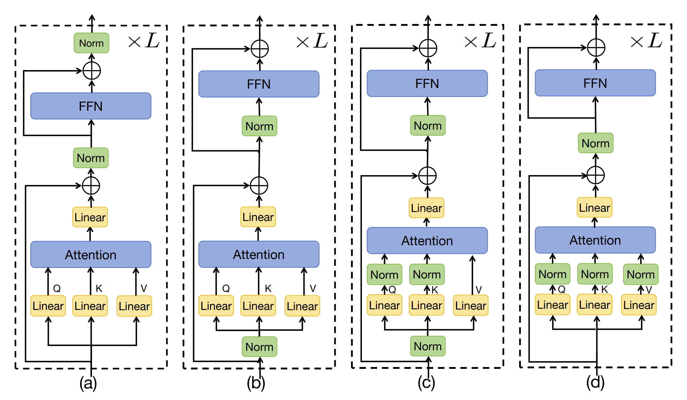
Transformer Block 的代码实现如下：
1 2 3 4 5 6 7 8 9 10 11 12 13 14 15 16 17 18 19 20 21 22 23 24 25 26 class TransformerBlock (nn.Module): def __init__ (self, config: ModelConfig ): super ().__init__() self .config = config self .mha = MHA( d_model=config.d_model, num_heads=config.num_heads, use_rope=config.use_rope, theta=config.rope_theta, max_seq_len=config.max_seq_len, ) self .ffn = FFN( d_model=config.d_model, d_ff=config.d_ff, ) self .norm1 = RMSNorm(config.d_model) self .norm2 = RMSNorm(config.d_model) def forward (self, x: torch.Tensor, token_positions: torch.Tensor | None = None ) -> torch.Tensor: x = x + self .mha(self .norm1(x), token_positions=token_positions) x = x + self .ffn(self .norm2(x)) return x
3.8 输出层（Output Layer） 在堆叠完若干个 Transformer blocks 之后，我们会得到每个位置的最终 hidden states：H ∈ R B × T × d model (25) H \in \mathbb{R}^{B \times T \times d_{\text{model}}} \tag{25} H ∈ R B × T × d model ( 25 )
接下来需要一个 Output Layer (LM Head) 把 hidden states 映射到词表大小的 logits：logits = H W out (26) \text{logits} = H W_{\text{out}} \tag{26} logits = H W out ( 26 )
其中：W out ∈ R d model × ∣ V ∣ , logits ∈ R B × T × ∣ V ∣ . (27) W_{\text{out}} \in \mathbb{R}^{d_{\text{model}} \times |V|},\ \text{logits} \in \mathbb{R}^{B \times T \times |V|}. \tag{27} W out ∈ R d model × ∣ V ∣ , logits ∈ R B × T × ∣ V ∣ . ( 27 )
在很多现代 LLM 中，通常还会在输出层前加一个最终归一化（同样是 Pre-Norm 风格）：logits = RMSNorm ( H ) W out . (28) \text{logits} = \text{RMSNorm}(H) W_{\text{out}}. \tag{28} logits = RMSNorm ( H ) W out . ( 28 )
1 2 3 4 5 6 7 8 9 10 11 12 class OutputLayer (nn.Module): def __init__ (self, d_model, vocab_size, use_norm: bool = False ): super ().__init__() self .linear = Linear(d_model, vocab_size) self .norm = RMSNorm(d_model) if use_norm else nn.Identity() def forward (self, x: torch.Tensor ) -> torch.Tensor: x = self .norm(x) logits = self .linear(x) return logits
3.8.1 权重共享（Weight Tying） 如果模型里有 token embedding 矩阵 E ∈ R ∣ V ∣ × d model E \in \mathbb{R}^{|V| \times d_{\text{model}}} E ∈ R ∣ V ∣ × d model 共享输入 embedding 和输出投影权重（weight tying） ：W out = E T . (29) W_{\text{out}} = E^T. \tag{29} W out = E T . ( 29 )
这样可以减少参数量，并且经常带来更好的训练稳定性与泛化效果。
当我们实现完 embedding、Transformer block（MHA + FFN）、以及输出层之后，就可以按照 Figure 1 的高层结构把整个语言模型串起来了。整体流程可以概括为三步：
Token Embedding ：把 token id 映射到向量表示堆叠 num_layers 个 Transformer Blocks Output Layers ：映射到词表分布
具体的代码如下：
1 2 3 4 5 6 7 8 9 10 11 12 13 14 15 16 17 18 19 20 21 22 23 24 25 26 27 28 class TransformerLM (nn.Module): def __init__ (self, config: ModelConfig ): super ().__init__() self .config = config self .token_embedding = nn.Embedding(config.vocab_size, config.d_model) self .layers = nn.ModuleList([TransformerBlock(config) for _ in range (config.num_layers)]) self .final_norm = RMSNorm(config.d_model) self .output_layer = OutputLayer(config.d_model, config.vocab_size, use_norm=config.use_final_norm) if config.tie_weights: self ._tie_weights() def forward (self, x: torch.Tensor, token_positions: torch.Tensor | None = None ) -> torch.Tensor: x = self .token_embedding(x) for layer in self .layers: x = layer(x, token_positions=token_positions) x = self .final_norm(x) logits = self .output_layer(x) return logits def _tie_weights (self ): self .output_layer.linear.weight = self .token_embedding.weight
token ids → embedding 得到 X 0 X_0 X 0 L L L H H H
3.10 Part 02 总结 总的来说，Part 02 就是在 Part 01 的 Tokenization 之后，把“能训练的语言模型”真正搭起来：我们从最基础的 Linear / Embedding 出发，逐步实现 RMSNorm（Pre-Norm）、现代 LLM 常用的 SwiGLU-FFN，再到最核心也最容易写错的（RoPE + Causal）Multi-Head Self-Attention，最终像搭积木一样组装出完整的 TransformerBlock，并串联成 TransformerLM，通过 Output Layer 输出 vocabulary logits 用于 next-token prediction。
这一部分最值得记住的工程要点有三类：
稳定性（stability） ：Softmax 的数值稳定（减 max）、Pre-Norm（RMSNorm 放在子层前）、以及 causal mask 防止未来信息泄露，都是“训练能不能跑起来”的关键。效率（efficiency） ：Q/K/V 投影应当是 3 次矩阵乘法（更进一步可以合成 1 次）、mask 用“softmax 前加 − ∞ -\infty − ∞ d × d d \times d d × d 结构（architecture） ：现代 LLM 的 Block 基本都遵循“RMSNorm → MHA/FFN → Residual”的 Pre-Norm 模式；FFN 常用 SwiGLU（激活 + gating）；RoPE 只作用在 Q/K（不作用在 V）；最后再接一个输出头（可选 final norm / weight tying）把 hidden states 映射到词表分布。
💾 拓展知识：LLM 参数量与显存估算
我们定义的模型配置 d_model=512, num_layers=4 是非常小的。如果是真实的 7B (70亿参数) 模型，如何估算显存？
模型权重 : 假设使用 FP16 (16-bit floating point)，每个参数占 2 Bytes。7B 模型权重约为 7 × 10 9 × 2 B ≈ 14 GB 7 \times 10^9 \times 2 \text{B} \approx 14 \text{GB} 7 × 1 0 9 × 2 B ≈ 14 GB KV Cache (推理时) : 随着 Context Length 增加，KV Cache 会占用大量显存。这也是为什么我们需要 Multi-Query Attention (MQA) 或 Grouped-Query Attention (GQA) 等技术的原因（虽然本 Assignment 使用的是标准的 MHA）。优化器状态 (训练时) : AdamW 优化器需要保存一阶和二阶动量，通常需要模型权重 2-3 倍的显存。
4 Part 03: 优化器（Optimizer）与训练代码 接下来，我们来实现训练语言模型所需的第三部分，也就是定义我们的Loss Function，以及Optimizer和Learning Rate Scheduler。
4.1 损失（Loss）与 困惑度（Perplexity） 我们先来定义我们的Loss Function，在神经网络训练中，Loss Function（损失函数）用于衡量模型预测与真实标签之间的差距。对于语言模型，我们的损失函数是交叉熵损失（Cross Entropy Loss）。
4.1.1 交叉熵损失（Cross Entropy Loss） 在现代常见的语言模型是Next-Token Prediction模型，其训练目标是预测下一个token，也就是给定前面 t t t t + 1 t+1 t + 1 P ( x t + 1 ∣ x 1 , x 2 , … , x t ) (30) P(x_{t+1}|x_1,x_2,\dots,x_t) \tag{30} P ( x t + 1 ∣ x 1 , x 2 , … , x t ) ( 30 )
假设我们有一个长度为 T T T ( x 1 , x 2 , … , x T ) (x_1, x_2, \dots, x_T) ( x 1 , x 2 , … , x T ) P ( x 1 , x 2 , … , x T ) = ∏ t = 1 T P ( x t ∣ x 1 , x 2 , … , x t − 1 ) (31) P(x_1, x_2, \dots, x_T) = \prod_{t=1}^T P(x_t|x_1, x_2, \dots, x_{t-1}) \tag{31} P ( x 1 , x 2 , … , x T ) = t = 1 ∏ T P ( x t ∣ x 1 , x 2 , … , x t − 1 ) ( 31 )
为了实现这个目标，我们通常使用交叉熵损失（Cross Entropy Loss）来衡量模型预测的概率分布与真实分布之间的差异。Cross Entropy Loss 常用于分类任务中，定义如下：L = − 1 N ∑ i = 1 N ∑ c = 1 C y i , c ln ( p i , c ) (32) \mathcal{L} = -\frac{1}{N} \sum_{i=1}^N \sum_{c=1}^C y_{i,c} \ln(p_{i,c}) \tag{32} L = − N 1 i = 1 ∑ N c = 1 ∑ C y i , c ln ( p i , c ) ( 32 )
其中：
N N N C C C y i , c y_{i,c} y i , c i i i i i i c ∗ c^* c ∗ y i , c ∗ = 1 y_{i,c^*}=1 y i , c ∗ = 1 p i , c p_{i,c} p i , c i i i c c c
实现这个损失函数时，我们通常会结合 softmax 一起使用，因为模型输出的 logits 需要先经过 softmax 转换为概率分布。
1 2 3 4 5 6 7 8 9 10 11 def cross_entropy (logits: torch.Tensor, labels: torch.Tensor ): logits = logits - torch.max (logits, dim=1 , keepdim=True ).values log_probs = logits - torch.log(torch.sum (torch.exp(logits), dim=1 , keepdim=True )) labels = labels.unsqueeze(1 ) loss = log_probs.gather(1 , labels).squeeze(1 ) loss = -loss.mean() return loss
其中 log_probs.gather(-1, labels) 这一行代码的作用是从 log_probs 张量中提取出每个样本对应的真实标签的对数概率值。具体来说：
log_probs 的 shape 是 (N, C)，表示 N N N C C C
labels 的 shape 是 (N, 1)，表示每个样本的真实类别索引。
gather(-1, labels) 会根据 labels 中的索引，从 log_probs 的第二维（类别维度）中提取对应的对数概率值，结果的 shape 是 (N, 1)。
在使用这个交叉熵损失函数时，我们通常会将模型的输出 logits 和对应的真实标签展开成一维向量。这样做的好处是，可以简化计算过程，使得每个时间步的预测都被视为一个独立的样本，从而方便计算整体的损失。
1 2 3 4 5 logits = model(inputs) logits = logits.view(-1 , logits.size(-1 )) targets = targets.view(-1 )
4.1.2 困惑度（Perplexity） 在语言模型中，除了交叉熵损失，我们还常用一个指标叫做困惑度（Perplexity, PPL）来评估模型的性能。困惑度衡量的是模型对测试数据的预测能力，数值越低表示模型越好。它的定义如下：PPL = exp ( − 1 N ∑ i = 1 N L i ) (33) \text{PPL} = \exp\left( -\frac{1}{N} \sum_{i=1}^N \mathcal{L}_i \right) \tag{33} PPL = exp ( − N 1 i = 1 ∑ N L i ) ( 33 )
它是交叉熵损失的指数形式，其中 L i \mathcal{L}_i L i i i i N N N PPL = exp ( − 1 N ∑ i = 1 N ln ( p i ) ) = ( ∏ i = 1 N 1 p i ) 1 N (34) \text{PPL} = \exp\left( -\frac{1}{N} \sum_{i=1}^N \ln(p_i) \right) = \left( \prod_{i=1}^N \frac{1}{p_i} \right)^{\frac{1}{N}} \tag{34} PPL = exp ( − N 1 i = 1 ∑ N ln ( p i ) ) = ( i = 1 ∏ N p i 1 ) N 1 ( 34 )
PPL 等价于“模型给真实 token 的概率 p p p 1 / p 1/p 1/ p
这个看起来很抽象，我们来看一个具体例子：假设我们有一个非常简单的词表，只有 4 个 token：{A, B, C, D}。现在我们有一个测试序列 B, C, D，模型在每个时间步的预测概率如下：
预测 B 的概率：0.5
预测 C 的概率：0.25
预测 D 的概率：0.1
那么，我们可以计算这个序列的困惑度：PPL = exp ( − 1 3 ( ln ( 0.5 ) + ln ( 0.25 ) + ln ( 0.1 ) ) ) ≈ 4.64 (35) \text{PPL} = \exp\left( -\frac{1}{3} \left( \ln(0.5) + \ln(0.25) + \ln(0.1) \right) \right) \approx 4.64 \tag{35} PPL = exp ( − 3 1 ( ln ( 0.5 ) + ln ( 0.25 ) + ln ( 0.1 ) ) ) ≈ 4.64 ( 35 )
这意味着，模型在预测下一个 token 时，平均每个 token 有大约 4.64 种可能的选择。因为词表只有 4 个 token，这个困惑度表明模型的预测能力还不够好。
代码实现如下：1 2 3 4 def perplexity (loss: torch.Tensor ) -> torch.Tensor: return torch.exp(loss)
4.2 优化器（Optimizer） 与 学习率调度器（Learning Rate Scheduler） 有了Loss Function之后，我们接下来要定义Optimizer和Learning Rate Scheduler，来指导模型参数的更新。
4.2.1 AdamW 在这个作业中，我们使用AdamW(Loshchilov and Hutter 2019)作为优化器。AdamW 是 Adam 优化器的一个变体，它通过将权重衰减（weight decay）与梯度更新解耦来改善模型的泛化能力。
首先我们来看一下Adam是什么。Adam 是一种自适应学习率优化算法，它结合了动量（Momentum）和RMSProp的思想，通过计算梯度的一阶矩估计（均值）和二阶矩估计（未中心化的方差）来调整每个参数的学习率。Adam 对每个参数 θ \theta θ
一阶矩（动量）m t m_t m t
二阶矩 v t v_t v t
它们的更新规则如下：m t = β 1 m t − 1 + ( 1 − β 1 ) g t v t = β 2 v t − 1 + ( 1 − β 2 ) g t 2 θ t = θ t − 1 − α m ^ t v ^ t + ϵ (36)
\begin{align*}
m_t &= \beta_1 m_{t-1} + (1 - \beta_1) g_t \\
v_t &= \beta_2 v_{t-1} + (1 - \beta_2) g_t^2 \\
\theta_t &= \theta_{t-1} - \alpha \frac{\hat{m}_t}{\sqrt{\hat{v}_t} + \epsilon}
\end{align*}
\tag{36}
m t v t θ t = β 1 m t − 1 + ( 1 − β 1 ) g t = β 2 v t − 1 + ( 1 − β 2 ) g t 2 = θ t − 1 − α v ^ t + ϵ m ^ t ( 36 ) g t g_t g t β 1 \beta_1 β 1 β 2 \beta_2 β 2 α \alpha α ϵ \epsilon ϵ m ^ t \hat{m}_t m ^ t v ^ t \hat{v}_t v ^ t m ^ t = m t 1 − β 1 t v ^ t = v t 1 − β 2 t (37)
\begin{align*}
\hat{m}_t &= \frac{m_t}{1 - \beta_1^t} \\
\hat{v}_t &= \frac{v_t}{1 - \beta_2^t}
\end{align*}
\tag{37}
m ^ t v ^ t = 1 − β 1 t m t = 1 − β 2 t v t ( 37 )
在 Adam 中，权重衰减（weight decay）通常会被实现成 L2 正则：也就是在损失函数中加入 λ 2 ∥ θ ∥ 2 \frac{\lambda}{2} \|\theta\|^2 2 λ ∥ θ ∥ 2 L = L original + λ 2 ∥ θ ∥ 2 \mathcal{L} = \mathcal{L}_{\text{original}} + \frac{\lambda}{2} \|\theta\|^2 L = L original + 2 λ ∥ θ ∥ 2 λ θ \lambda \theta λ θ g t ← g t + λ θ t − 1 (38) g_t \leftarrow g_t + \lambda \theta_{t-1} \tag{38} g t ← g t + λ θ t − 1 ( 38 )
如果直接把这个修改后的梯度带入 Adam 的更新规则，我们会得到：m t = β 1 m t − 1 + ( 1 − β 1 ) ( g t + λ θ t − 1 ) v t = β 2 v t − 1 + ( 1 − β 2 ) ( g t + λ θ t − 1 ) 2 θ t = θ t − 1 − α m ^ t v ^ t + ϵ = θ t − 1 − α m ^ t v ^ t + ϵ
\begin{align*}
m_t &= \beta_1 m_{t-1} + (1 - \beta_1)(g_t + \lambda \theta_{t-1}) \\
v_t &= \beta_2 v_{t-1} + (1 - \beta_2)(g_t + \lambda \theta_{t-1})^2 \\
\theta_t &= \theta_{t-1} - \alpha \frac{\hat{m}_t}{\sqrt{\hat{v}_t} + \epsilon} \\
&= \theta_{t-1} - \alpha \frac{\hat{m}_t}{\sqrt{\hat{v}_t} + \epsilon}
\end{align*}
m t v t θ t = β 1 m t − 1 + ( 1 − β 1 ) ( g t + λ θ t − 1 ) = β 2 v t − 1 + ( 1 − β 2 ) ( g t + λ θ t − 1 ) 2 = θ t − 1 − α v ^ t + ϵ m ^ t = θ t − 1 − α v ^ t + ϵ m ^ t
AdamW（Adam with weight decay）想做的事情很简单：每一步都把参数往 0 拉一点，即让参数规模受控、提升泛化，也就是权重衰减，只是一条独立的线性收缩，不被任何自适应缩放影响。但在 Adam 里，情况并非如此。
在 Adam 里，更新会被 v ^ t \sqrt{\hat{v}_t} v ^ t
正则项也会被纳入 m ^ t , v ^ t \hat{m}_t, \hat{v}_t m ^ t , v ^ t
结果它也会被缩放
换句话说：在 Adam 这种自适应优化器里，L2 正则几乎不表现为 weight decay。(Loshchilov and Hutter 2019) 的核心观察就是：如果我们想要真正实现“把参数往 0 拉”的正则化效果，就应该把它从 Adam 的梯度更新中拆出来。
AdamW 的算法如下所示：
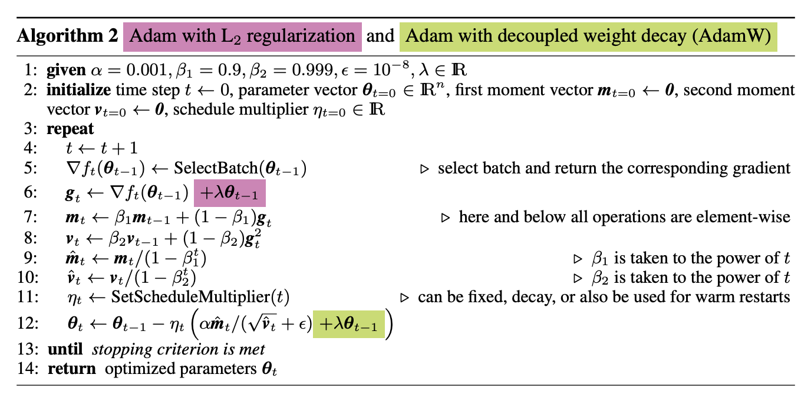
可以看到，AdamW 把 weight decay 从梯度更新中解耦出来，直接在参数更新时做线性收缩：θ t = θ t − 1 − α m ^ t v ^ t + ϵ − α λ θ t − 1 (39) \theta_t = \theta_{t-1} - \alpha \frac{\hat{m}_t}{\sqrt{\hat{v}_t} + \epsilon} - \alpha \lambda \theta_{t-1} \tag{39} θ t = θ t − 1 − α v ^ t + ϵ m ^ t − α λ θ t − 1 ( 39 )
这样就保证了 weight decay 的效果是一致的，不会被自适应缩放影响。
理解了 AdamW 的原理后，我们来看一下它的代码实现：
1 2 3 4 5 6 7 8 9 10 11 12 13 14 15 16 17 18 19 20 21 22 23 24 25 26 27 28 29 30 31 32 33 34 35 36 37 38 39 40 41 42 43 44 45 46 47 48 49 50 51 52 53 54 55 56 57 58 59 60 61 62 63 64 65 66 67 68 69 70 71 72 73 74 75 76 77 78 79 80 81 82 83 84 class AdamW (torch.optim.Optimizer): def __init__ ( self, params: Iterable[torch.nn.Parameter], lr: float = 1e-3 , betas: tuple [float , float ] = (0.9 , 0.999 eps: float = 1e-8 , weight_decay: float = 1e-2 , ): if lr < 0.0 : raise ValueError(f"Invalid learning rate: {lr} " ) if eps <= 0.0 : raise ValueError(f"Invalid epsilon value: {eps} " ) if weight_decay < 0.0 : raise ValueError(f"Invalid weight_decay value: {weight_decay} " ) if not isinstance (betas, tuple ) or len (betas) != 2 : raise ValueError(f"betas must be a tuple of length 2, got: {betas} " ) beta1, beta2 = betas if not (0.0 <= beta1 < 1.0 ): raise ValueError(f"Invalid beta1 value: {beta1} " ) if not (0.0 <= beta2 < 1.0 ): raise ValueError(f"Invalid beta2 value: {beta2} " ) defaults = dict (lr=lr, betas=betas, eps=eps, weight_decay=weight_decay) super ().__init__(params, defaults) @torch.no_grad() def step (self, closure: Optional [callable ] = None ): """执行一次参数更新""" loss = None if closure is not None : with torch.enable_grad(): loss = closure() for group in self .param_groups: lr: float = group["lr" ] beta1, beta2 = group["betas" ] eps: float = group["eps" ] weight_decay: float = group["weight_decay" ] for p in group["params" ]: if p.grad is None : continue grad = p.grad if grad.is_sparse: raise RuntimeError("AdamW does not support sparse gradients" ) state = self .state[p] if len (state) == 0 : state["step" ] = 0 state["exp_avg" ] = torch.zeros_like(p, memory_format=torch.preserve_format) state["exp_avg_sq" ] = torch.zeros_like(p, memory_format=torch.preserve_format) exp_avg = state["exp_avg" ] exp_avg_sq = state["exp_avg_sq" ] state["step" ] += 1 t = state["step" ] exp_avg.mul_(beta1).add_(grad, alpha=(1.0 - beta1)) exp_avg_sq.mul_(beta2).addcmul_(grad, grad, value=(1.0 - beta2)) bias_correction1 = 1.0 - beta1**t bias_correction2 = 1.0 - beta2**t step_size = lr / bias_correction1 denom = (exp_avg_sq / bias_correction2).sqrt().add_(eps) if weight_decay != 0.0 : p.mul_(1.0 - lr * weight_decay) p.addcdiv_(exp_avg, denom, value=-step_size) return loss
🔧 进阶技巧：Param Groups
在 AdamW 的实现中，你看到了 for group in self.param_groups:。
典型应用 : 在微调（Fine-tuning）时，我们通常希望底层的 Transformer Block 学习率低一点（保持通用特征），而顶层的 Output Layer 学习率高一点（适应新任务）。通过 param_groups 就可以轻松实现这种分层学习率 (Layer-wise Learning Rate) 。
4.2.2 余弦退火学习率调度器（Cosine Annealing Learning Rate Scheduler） 有了优化器之后，我们还需要一个Learning Rate Scheduler来动态调整学习率。在深度学习训练过程中，最合适的学习率会随阶段变化：
训练早期 ：模型还没学到东西，参数离目标很远
训练后期 ：模型接近收敛
用更小的学习率，避免在最优点附近震荡，提升稳定性与最终效果
因此我们需要Learning Rate Scheduler，其核心思想是：在不同时期调整不同的Learning Rate。一个常见的Learning Rate Scheduler叫做 Cosine Annealing Scheduler。
它把学习率 α t \alpha_t α t
Warm-Up ：从 0 线性提升到 α max \alpha_{\text{max}} α max Cosine Annealing ：从 α max \alpha_{\text{max}} α max α min \alpha_{\text{min}} α min Post-Annealing ：保持 α min \alpha_{\text{min}} α min
我们先来定义几个符号：
符号
含义
t t t 当前训练 step（迭代次数）
α max \alpha_{\text{max}} α max 最大学习率（峰值）
α min \alpha_{\text{min}} α min 最小/最终学习率
T w T_w T w warm-up 的步数（预热多久）
T c T_c T c Cosine Annealing 预热的步数（到这个 step 学习率降到 α min \alpha_{\text{min}} α min
α t \alpha_t α t 当前学习率
接下来我们看一下如何调整这三个不同的阶段：
阶段1: Warm-Up 当 t < T w t < T_w t < T w α max \alpha_{\text{max}} α max α t = t T w α max (40) \alpha_t = \frac{t}{T_w} \alpha_{\text{max}} \tag{40} α t = T w t α max ( 40 )
阶段2: Cosine Annealing 这个是相对复杂的阶段，在这个阶段我们的学习率用余弦曲线下降：α t = α min + 1 2 ( 1 + cos ( t − T w T c − T w π ) ) ( α max − α min ) (41) \alpha_t = \alpha_{\text{min}} + \frac{1}{2} \left( 1 + \cos\left( \frac{t - T_w}{T_c - T_w} \pi \right) \right) (\alpha_{\text{max}} - \alpha_{\text{min}}) \tag{41} α t = α min + 2 1 ( 1 + cos ( T c − T w t − T w π ) ) ( α max − α min ) ( 41 )
这个式子做了两件事：
用 cos ( ⋅ ) \cos(\cdot) cos ( ⋅ )
再把它映射成一个从 α max \alpha_{\text{max}} α max α min \alpha_{\text{min}} α min
我们查看一下两个端点：
当 t = T w t = T_w t = T w cos ( 0 ) = 1 \cos(0) = 1 cos ( 0 ) = 1 α t = α min + α max − α min = α max \alpha_t = \alpha_{\text{min}} + \alpha_{\text{max}} - \alpha_{\text{min}} = \alpha_{\text{max}} α t = α min + α max − α min = α max
当 t = T c t = T_c t = T c cos ( π ) = − 1 \cos(\pi) = -1 cos ( π ) = − 1 α t = α min + 0 = α min \alpha_t = \alpha_{\text{min}} + 0 = \alpha_{\text{min}} α t = α min + 0 = α min
阶段3: Post-Annealing 当 t ≥ T c t \geq T_c t ≥ T c α t \alpha_t α t α min \alpha_{\text{min}} α min
代码实现也很简单：1 2 3 4 5 6 7 8 9 10 11 12 13 14 15 16 17 18 19 20 21 22 23 24 def cosine_annealing_lr ( t: int , alpha_max: float , alpha_min: float , Tw: int , Tc: int , float : if Tw > 0 and t < Tw: return (t / Tw) * alpha_max if t <= Tc: if Tc == Tw: return alpha_max progress = (t - Tw) / (Tc - Tw) return alpha_min + 0.5 * (1.0 + math.cos(math.pi * progress)) * (alpha_max - alpha_min) return alpha_min
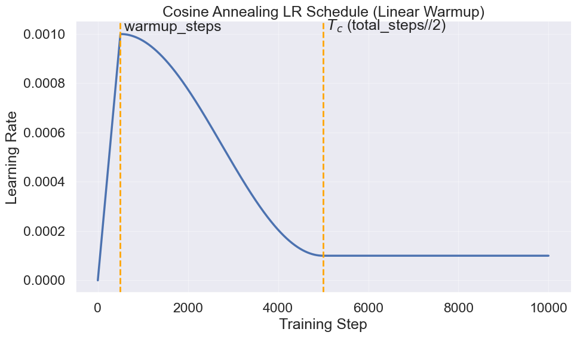
Cosine Annealing Learning Rate Scheduler Example
4.2.3 梯度裁剪（Gradient Clipping） 在训练神经网络时，可能会遇到某些“特别难/特别极端”的训练样本，它们会让模型产生非常大的梯度。如果直接用这种梯度更新参数，可能会导致：
Loss Spike ：Loss 突然爆炸（数值不稳定）参数更新步子太大 ：导致训练发散训练曲线抖动得很厉害 ：难以收敛
为了解决这个问题，实践中常用 Gradient Clipping 。它的核心思想非常简单：把所有参数的梯度合起来，计算它们的 L2-Norm ∥ g ∥ 2 \|g\|_2 ∥ g ∥ 2 M M M
我们有两种情况：
∥ g ∥ 2 ≤ M \|g\|_2 \le M ∥ g ∥ 2 ≤ M ∥ g ∥ 2 > M \|g\|_2 > M ∥ g ∥ 2 > M M ∥ g ∥ 2 + ϵ \frac{M}{\|g\|_2 + \epsilon} ∥ g ∥ 2 + ϵ M g ← g ⋅ M ∥ g ∥ 2 + ϵ (42) g \leftarrow g \cdot \frac{M}{\|g\|_2 + \epsilon} \tag{42} g ← g ⋅ ∥ g ∥ 2 + ϵ M ( 42 )
通过这种缩放的方式，我们可以实现：
方向不变 ：裁剪不会改变梯度的方向（只是整体缩放）步子变小 ：当梯度太大时，相当于强行让更新不要跨太大步更稳定 ：尤其对 RNN、Transformer 或训练早期常见的“梯度爆炸”问题很有帮助
代码实现也很简单、直观：1 2 3 4 5 6 7 8 9 10 11 12 13 14 15 16 17 18 19 20 21 22 @torch.no_grad() def gradient_clip ( parameters: Iterable[torch.nn.Parameter], max_l2_norm: float , eps: float = 1e-6 , None : total_norm = 0.0 for p in parameters: if p.grad is not None : param_norm = p.grad.data.norm(2 ) total_norm += param_norm.item() ** 2 total_norm = total_norm**0.5 clip_coef = max_l2_norm / (total_norm + eps) if clip_coef < 1.0 : for p in parameters: if p.grad is not None : p.grad.data.mul_(clip_coef)
4.2.4 整合实现 有了这三个优化的组件之后，我们就可以把它们放在一起，形成一个完整的训练步骤：
1 2 3 4 5 6 7 8 9 10 11 12 13 14 15 16 17 18 19 20 21 22 23 24 25 26 27 28 29 30 31 32 33 34 inputs, targets = data_loading_sequential( x=x, batch_size=train_config.batch_size, context_length=model.config.max_seq_len, device=train_config.device, state=state, ) with ctx: logits = model(inputs) logits = logits.view(-1 , logits.size(-1 )) targets = targets.view(-1 ) loss = cross_entropy(logits, targets) optimizer.zero_grad(set_to_none=True ) loss.backward() gradient_clip(model.parameters(), max_l2_norm=train_config.max_grad_norm) lr = cosine_annealing_lr( t=step, alpha_max=train_config.max_lr, alpha_min=train_config.min_lr, Tw=train_config.warmup_steps, Tc=train_config.num_steps - train_config.warmup_steps, ) for param_group in optimizer.param_groups: param_group["lr" ] = lr optimizer.step()
4.3 数据加载器（Dataloader） 有了模型和优化器之后，我们还需要一个数据加载器（Dataloader） 来提供训练数据。在语言模型的训练中，数据通常是文本序列，我们需要将这些文本序列转换为模型可以处理的格式。还记得我们在 Part 01 讲过的 Tokenization 吗？我们需要先把文本转成 token ids，然后再组织成适合模型输入的批次。我们已经训练完Tokenizer，并且把文本转换成了token id的形式保存在 .bin 文件里，接下来我们需要一个Dataloader来从这些token ids中提取训练样本。
在这个作业中，我们采用为 context_length 的顺序采样（sequential sampling） 作为一个数据加载器。我们会不断地从数据中按顺序提取出长度为 context_length 的子序列作为输入，目标是预测下一个 token。我们会不断地从数据中提取这样的子序列，直到达到指定的批次大小（batch size）。
代码中用的是 Random Sampling ，也就是随机指定起点，然后截取 context_length 的序列作为输入。
1 2 3 4 5 6 7 8 9 10 11 12 13 14 15 16 17 18 19 20 21 22 23 24 25 26 27 28 29 30 31 32 33 34 35 36 37 38 39 40 41 42 43 44 45 46 47 48 49 50 51 52 53 original_data = np.memmap( train_config.train_data_path, dtype=np.uint16, mode="r+" , ) x_t = torch.from_numpy(original_data) def get_batch_sequential ( x_t: torch.Tensor | np.ndarray, batch_size: int , context_length: int , device: str | torch.device, state: BatchState, *, stride: int | None = None , if stride is None : stride = context_length n = x_t.numel() max_start = n - context_length - 1 if max_start < 0 : raise ValueError(f"Sequence too short: n={n} , context_length={context_length} " ) last_start = state.pos + (batch_size - 1 ) * stride end = last_start + context_length + 1 if end > n: state.pos = 0 last_start = (batch_size - 1 ) * stride end = last_start + context_length + 1 base = x_t[state.pos : end] inputs = base.as_strided(size=(batch_size, context_length), stride=(stride, 1 )) targets = base[1 :].as_strided(size=(batch_size, context_length), stride=(stride, 1 )) state.pos += batch_size * stride if (isinstance (device, torch.device) and device.type == "cuda" ) or ( isinstance (device, str ) and "cuda" in device.lower() ): inputs = inputs.to(device, non_blocking=True ).long() targets = targets.to(device, non_blocking=True ).long() else : inputs = inputs.long().to(device) targets = targets.long().to(device) return inputs, targets
需要注意的是，这部分可能是训练时间瓶颈，因为数据加载和预处理可能会比较慢，尤其是当数据量很大时。我们运用了以下几个技巧来提升数据加载的效率：
使用 np.memmap 来内存映射数据文件，这样可以避免一次性加载整个数据集到内存中，节省内存空间。
使用 as_strided 来创建输入和目标的视图，避免了数据的复制，提高了效率。
使用非阻塞的数据传输（non_blocking=True）来加速数据从 CPU 到 GPU 的传输。
4.4 检查点（Checkpoint） 在训练模型的过程中，我们需要时不时的保持 Checkpoint，为什么呢？因为训练模型不只是“把 loss 训到低”这么简单，我们还经常需要：
中途恢复训练 ：比如训练跑到一半机器断了、作业超时、意外退出实验与复现 ：方便之后分析训练过程、比较不同阶段的模型、做不同阶段的采样、Exponential Moving Average（EMA）等等
Checkpoint 的目标是：让你能从中断处无缝继续训练 。
模型参数（model weights）
优化器状态（optimizer state）
例如 AdamW 的一阶/二阶动量（moment estimates）
不存优化器状态，恢复后训练就会变（因为动量没了）
当前迭代步数（iteration / step）
用来恢复学习率从头开始或错位
否则学习率会从头开始 schedule
实现如下：1 2 3 4 5 6 7 8 9 10 11 12 13 14 15 16 17 18 19 20 21 22 23 24 25 26 27 28 29 30 31 32 33 def save_checkpoint ( model: torch.nn.Module, optimizer, iteration, out: str | os.PathLike | typing.BinaryIO | typing.IO[bytes ], verbose: bool = False , None : state = { "model_state_dict" : model.state_dict(), "optimizer_state_dict" : optimizer.state_dict(), "iteration" : iteration, } torch.save(state, out) if verbose: print_color(f"Checkpoint saved to {out} " , "blue" ) def load_checkpoint ( src: str | os.PathLike | typing.BinaryIO | typing.IO[bytes ], model, optimizer, verbose: bool = False int : state = torch.load(src, map_location=get_device()) model.load_state_dict(state["model_state_dict" ]) optimizer.load_state_dict(state["optimizer_state_dict" ]) if verbose: print_color(f"Checkpoint loaded from {src} " , "blue" ) return state["iteration" ]
4.5 训练循环 最后，我们把所有的组件放在一起，形成一个完整的训练循环：
1 2 3 4 5 6 7 8 9 10 11 12 13 14 15 16 17 18 19 20 21 22 23 24 25 26 27 28 29 30 31 32 33 34 35 36 37 38 39 40 41 42 43 44 45 46 47 48 49 50 51 52 53 54 55 56 57 58 59 60 61 62 63 64 65 66 67 68 69 70 71 72 73 74 75 76 77 78 79 80 81 82 83 84 85 86 87 88 89 90 91 92 93 94 95 96 97 98 99 100 101 102 103 104 105 106 107 108 109 110 111 112 113 114 115 def train (model: torch.nn.Module, optimizer: torch.optim.Optimizer, train_config: TrainingConfig ): tokenizer = load_tokenizer_from_dir(train_config.dataset_dir) original_data = np.memmap( train_config.train_data_path, dtype=np.uint16, mode="r+" , ) x = torch.from_numpy(original_data) best_eval_loss = float ("inf" ) ctx = get_ctx(train_config.use_mixed_precision, train_config.device) state = BatchState(pos=0 ) for step in range (train_config.num_steps): inputs, targets = data_loading_sequential( x=x, batch_size=train_config.batch_size, context_length=model.config.max_seq_len, device=train_config.device, state=state, ) with ctx: logits = model(inputs) logits = logits.view(-1 , logits.size(-1 )) targets = targets.view(-1 ) loss = cross_entropy(logits, targets) optimizer.zero_grad(set_to_none=True ) loss.backward() gradient_clip(model.parameters(), max_l2_norm=train_config.max_grad_norm) lr = cosine_annealing_lr( t=step, alpha_max=train_config.max_lr, alpha_min=train_config.min_lr, Tw=train_config.warmup_steps, Tc=train_config.num_steps - train_config.warmup_steps, ) for param_group in optimizer.param_groups: param_group["lr" ] = lr optimizer.step() if train_config.wandb_logging: wandb.log( { "train/loss" : loss.item(), "train/perplexity" : perplexity(loss).item(), "train/lr" : lr, }, step=step + 1 , ) print_color( f"Step {step + 1 } /{train_config.num_steps} , Loss: {loss.item():.4 f} , LR: {lr:.6 f} " , "green" ) if train_config.eval_log_interval > 0 and (step + 1 ) % train_config.eval_log_interval == 0 : del inputs, targets, logits, loss clear_memory() print_color("Evaluating model..." , "blue" ) eval_loss, eval_perplexity = eval_model(model, train_config, step + 1 ) wandb.log( { "eval/loss" : eval_loss.item(), "eval/perplexity" : eval_perplexity.item(), }, step=step + 1 , ) print_color( f"Eval Loss: {eval_loss.item():.4 f} , Eval Perplexity: {eval_perplexity.item():.4 f} " , "blue" ) if eval_loss < best_eval_loss: best_eval_loss = eval_loss print_color(f"New best eval loss: {best_eval_loss:.4 f} " , "yellow" ) out_path = os.path.join( train_config.save_checkpoint_dir, train_config.model_name, f"best_model_step_{step + 1 } .pt" , ) save_checkpoint( model=model, optimizer=optimizer, iteration=step + 1 , out=out_path, verbose=True , ) if train_config.sampling_log_interval > 0 and (step + 1 ) % train_config.sampling_log_interval == 0 : generated_outputs = generate( model=model, prompt="Once upon a time" , tokenizer=tokenizer, max_new_tokens=256 , top_k=50 , temperature=0.8 , ) generated_text = generated_outputs["generated_text" ] print_color(f"Generated text at step {step + 1 } :" , "cyan" ) print ("Once upon a time" , end="" ) print_color(f"{generated_text} \n" , "cyan" )
5 Part 04: 生成 训练完模型之后，我们可以用它来生成文本。在语言模型中，文本生成通常是通过采样（sampling） 的方式来实现的。给定一个初始的上下文（prompt），模型会根据当前的上下文预测下一个 token 的概率分布，然后从这个分布中采样一个 token，加入到上下文中，重复这个过程，直到生成指定长度的文本。
首先，我们来看一下采样的基本流程：
输入上下文 ：给定一个初始的文本上下文（prompt），将其转换为 token ids。循环生成 ：对于每一步生成：
使用模型预测下一个 token 的概率分布。
根据采样策略从概率分布中选择下一个 token。
将选中的 token 加入到上下文中，作为下一步的输入。
重复上述过程，直到生成指定数量的 token。
输出生成文本 ：将生成的 token ids 转换回文本，输出最终生成的文本。
用代码实现如下：
1 2 3 4 5 6 7 8 9 10 11 12 13 14 15 16 17 18 19 20 21 22 23 24 25 26 27 28 29 30 31 32 33 34 35 36 37 38 39 40 41 42 43 44 45 46 47 48 49 50 51 52 53 54 55 @torch.no_grad() def generate ( model: torch.nn.Module, prompt: torch.Tensor | str , tokenizer: BPETokenizer, max_new_tokens: int = 256 , top_k: int = 0 , top_p: float = 0.0 , temperature: float = 1.0 , dict : model.eval () if isinstance (prompt, str ): out = tokenizer.encode(prompt) input_ids = out.ids if hasattr (out, "ids" ) else out input_ids = torch.tensor(input_ids, dtype=torch.long).unsqueeze(0 ) else : input_ids = prompt.unsqueeze(0 ) input_ids = input_ids.to(model.device) input_len = input_ids.shape[1 ] with torch.amp.autocast("cuda" , enabled=False ): for _ in range (max_new_tokens): logits = model(input_ids) next_token_logits = logits[:, -1 , :].float () assert temperature > 0.0 , "Temperature must be positive." assert top_p == 0.0 or top_k == 0 , "Only one of top_p or top_k should be set." next_token_logits = next_token_logits / temperature if top_k > 0 : next_token_id = top_k_sampling(next_token_logits, top_k) elif top_p > 0.0 : next_token_id = top_p_sampling(next_token_logits, top_p) else : next_token_id = next_token_logits.argmax(dim=-1 , keepdim=True ) if next_token_id.item() == tokenizer.eos_token_id: break input_ids = torch.cat([input_ids, next_token_id], dim=-1 ) input_ids = input_ids.squeeze(0 ) all_text = tokenizer.decode(input_ids.tolist()) generated_ids = input_ids[input_len:] generated_text = tokenizer.decode(generated_ids.tolist()) model.train() return { "all_text" : all_text, "generated_text" : generated_text, "generated_ids" : generated_ids, }
其中不同的采样过程，会生成不同风格的文本。我们来看一下几种常用的采样方法：
Greedy Sampling
Top-K Sampling
Top-P (Nucleus) Sampling
5.1 贪心采样（Greedy Sampling） Greedy Sampling 是最简单的一种采样方法。在每一步生成时，模型会选择概率最高的 token 作为下一个 token。虽然这种方法简单且高效，但它可能会导致生成的文本缺乏多样性和创造性，因为它总是选择最可能的选项，容易陷入局部最优。
1 2 next_token_id = next_token_logits.argmax(dim=-1 , keepdim=True )
5.2 Top-K 采样（Top-K Sampling） Top-K Sampling 是一种改进的采样方法。在每一步生成时，模型会选择概率最高的 K 个 token，然后从这 K 个 token 中根据它们的概率分布进行采样。这样可以增加生成文本的多样性，同时仍然保持一定的质量。
1 2 3 4 5 6 7 8 9 10 11 12 13 14 15 16 17 18 19 20 21 22 23 24 def top_k_sampling ( logits: torch.Tensor, top_k: int , if top_k <= 0 : probs = F.softmax(logits, dim=-1 ) return torch.multinomial(probs, num_samples=1 ).squeeze(-1 ) top_k_logits, top_k_indices = torch.topk(logits, top_k, dim=-1 ) filtered_logits = torch.full_like(logits, float ("-inf" )) filtered_logits.scatter_(dim=-1 , index=top_k_indices, src=top_k_logits) probs = F.softmax(filtered_logits, dim=-1 ) next_token = torch.multinomial(probs, num_samples=1 ) return next_token
5.3 Top-P 采样（Top-P Sampling） Top-P Sampling（也称为 Nucleus Sampling）是一种更灵活的采样方法。在每一步生成时，模型会选择累计概率达到 P 的最小 token 集合，然后从这个集合中根据它们的概率分布进行采样。这样可以动态调整候选 token 的数量，既保证了多样性，又避免了选择过于罕见的 token。
1 2 3 4 5 6 7 8 9 10 11 12 13 14 15 16 17 18 19 20 21 22 23 24 25 26 27 28 29 def top_p_sampling (logits: torch.Tensor, top_p: float ) -> torch.Tensor: """ logits: (B, V) 返回: (B,) 采样得到的 token id """ assert 0.0 < top_p <= 1.0 sorted_logits, sorted_indices = torch.sort(logits, dim=-1 , descending=True ) sorted_probs = F.softmax(sorted_logits, dim=-1 ) cumulative_probs = torch.cumsum(sorted_probs, dim=-1 ) sorted_indices_to_remove = cumulative_probs > top_p sorted_indices_to_remove[..., 1 :] = sorted_indices_to_remove[..., :-1 ].clone() sorted_indices_to_remove[..., 0 ] = False indices_to_remove = torch.zeros_like(logits, dtype=torch.bool ) indices_to_remove.scatter_(dim=-1 , index=sorted_indices, src=sorted_indices_to_remove) filtered_logits = logits.masked_fill(indices_to_remove, float ("-inf" )) probs = F.softmax(filtered_logits, dim=-1 ) next_token = torch.multinomial(probs, num_samples=1 ) return next_token
5.4 Temperature 当然，我们还可以通过调整 temperature 来控制生成文本的随机性。Temperature 是一个正数，通常在( 0 , ∞ ) (0, \infty) ( 0 , ∞ )
当 temperature < 1 时，概率分布会变得更陡峭，模型更倾向于选择高概率的 token，生成的文本更确定性。
当 temperature > 1 时，概率分布会变得更平坦，模型更倾向于选择低概率的 token，生成的文本更具多样性和创造性。
数学上，我们通过除以 temperature 来调整 logits：softmax i ( z ; T ) = exp ( z i T ) ∑ j exp ( z j T ) (43) \text{softmax}_i(z; T) = \frac{\exp\left(\frac{z_i}{T}\right)}{\sum_j \exp\left(\frac{z_j}{T}\right)} \tag{43} softmax i ( z ; T ) = ∑ j exp ( T z j ) exp ( T z i ) ( 43 )
5.5 Part 04 总结 在本部分，我们介绍了如何使用训练好的语言模型进行文本生成。我们讨论了几种常用的采样方法，包括 Greedy Sampling, Top-K Sampling 和 Top-P Sampling，并介绍了如何通过调整 temperature 来控制生成文本的随机性。通过这些方法，我们可以生成多样化且有趣的文本内容。
Sampling Method
Description
Pros
Cons
Greedy Sampling
选择概率最高的 token
简单高效
可能缺乏多样性，容易陷入局部最优
Top-K Sampling
从概率最高的 K 个 token 中采样，K 越大多样性越高
增加多样性
需要选择合适的 K 值，通常 K 值在 10 到 50 之间
Top-P Sampling
从累计概率达到 P 的 token 集合中采样，P 越大多样性越高
动态调整候选 token 数量
需要选择合适的 P 值，通常 P 值在 0.8 到 0.9 之间
Temperature Adjustment
通过调整 temperature 控制随机性，temperature 越大多样性越高
灵活控制生成文本的多样性
需要选择合适的 temperature 值，通常在 0.7 到 1.0 之间
6 Part 05: 实验 终于，我们完成了模型的训练和生成部分。接下来我们来看一下实验结果。在这里，我们训练了一个小型的 GPT-like 模型，模型配置如下：
1 2 3 4 5 6 7 8 9 10 11 12 13 14 15 16 17 18 19 20 21 22 23 24 25 26 27 28 29 30 31 32 33 34 35 36 37 38 39 40 41 42 43 44 45 46 47 48 49 50 51 52 53 54 55 56 57 @dataclass class ModelConfig : vocab_size: int = 10000 max_seq_len: int = 256 d_model: int = 512 d_ff: int = 1344 num_heads: int = 16 num_layers: int = 4 dropout: float = 0.1 use_rms_norm: bool = True pre_norm: bool = True eos_token_id: int = 256 use_rope: bool = True rope_theta: float = 10000.0 tie_weights: bool = False use_final_norm: bool = False @dataclass class TrainingConfig : batch_size: int = 32 num_steps: int = 6_000 dataset_dir: str = "datasets/tiny_stories" train_data_path: str = "datasets/tiny_stories/train.bin" eval_data_path: str = "datasets/tiny_stories/eval.bin" betas: tuple = field(default=(0.9 , 0.98 )) weight_decay: float = 1e-5 max_lr: float = 2e-4 min_lr: float = 1e-5 warmup_steps: int = 1000 max_grad_norm: float = 1.0 wandb_logging: bool = True eval_log_interval: int = 500 sampling_log_interval: int = 1000 model_name: str = "tiny_stories_transformer" save_checkpoint_dir: str = "checkpoints" device: str = "cuda" debug_mode: bool = False use_mixed_precision: bool = True seed: int = 2025
我们使用一个T4 GPU进行训练，训练了6K步，Batch Size为32。接下来我们来看一下训练结果。
6.1 曲线图
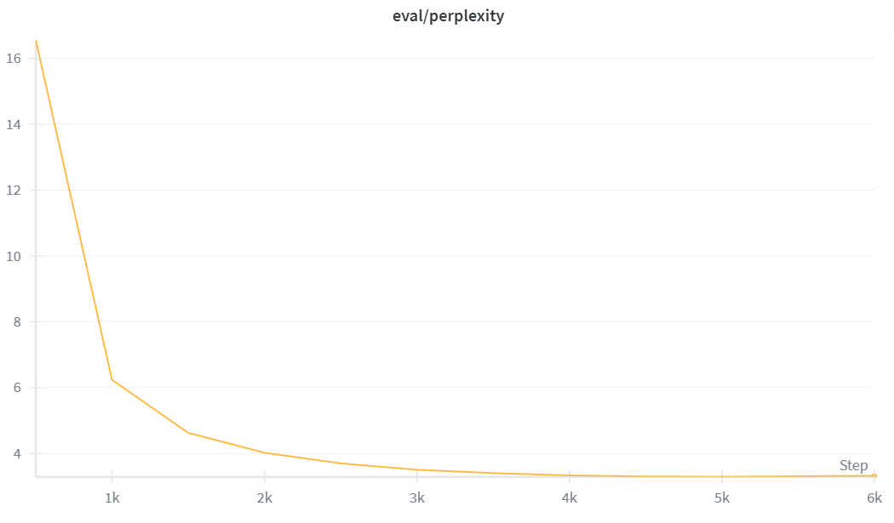
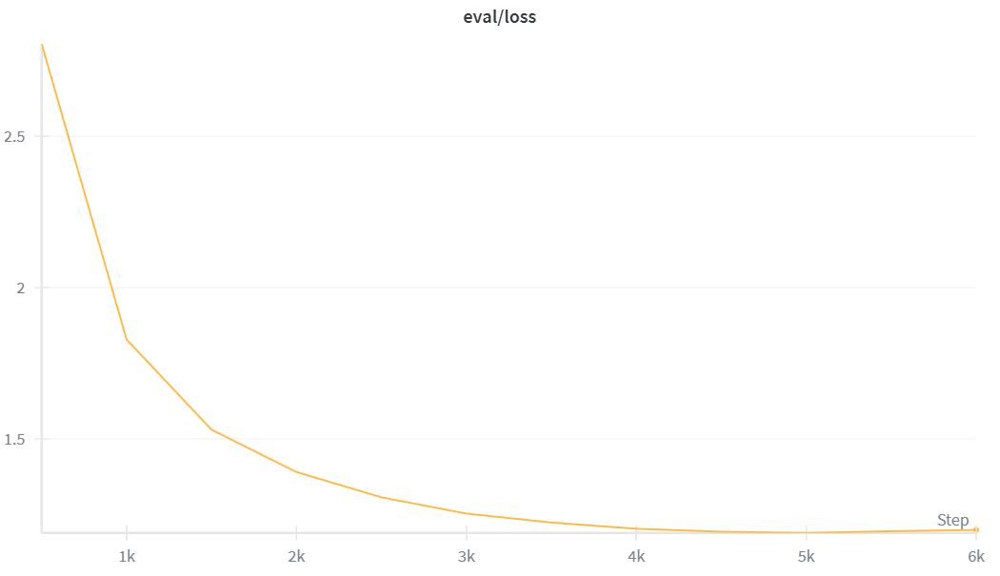
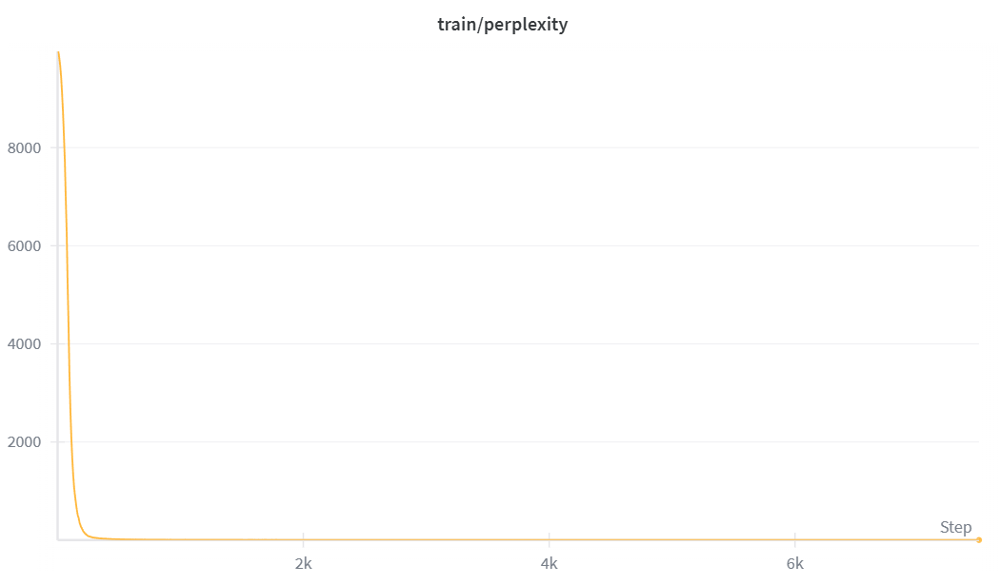
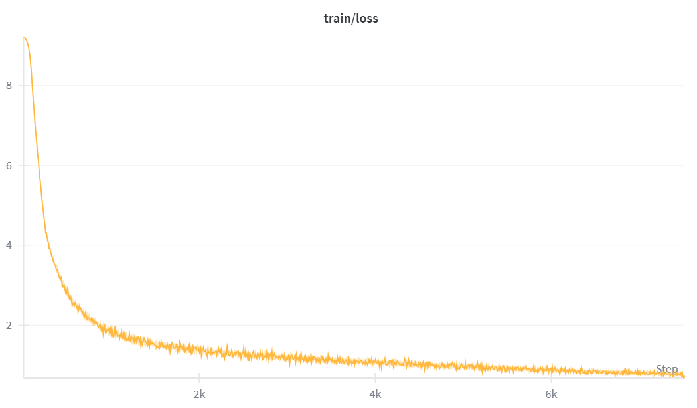
Loss 和 Perplexity 曲线显示
6.2 生成文本示例 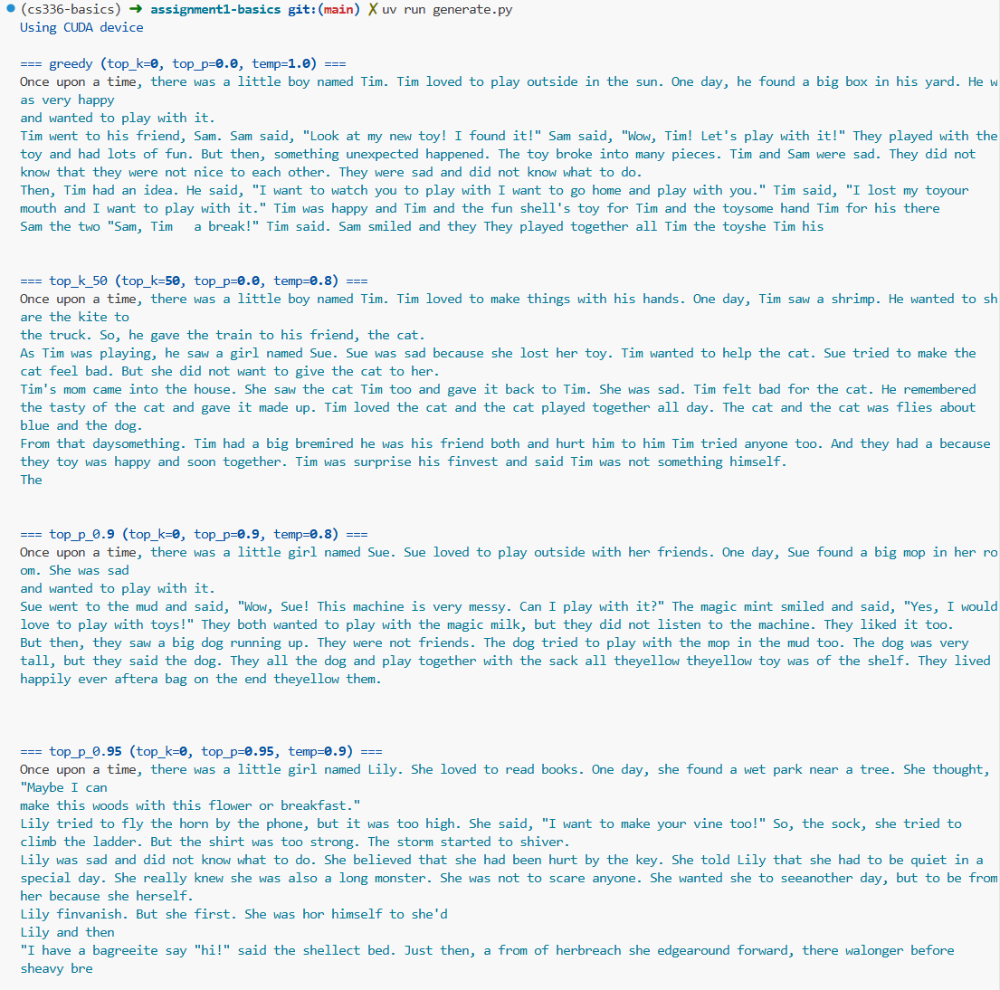
生成文本示例
我们可以看到，生成的句子有一定的连贯性，但是故事并不完整，且有一定的逻辑混乱。这是因为模型规模较小，训练步数有限，无法完全捕捉到复杂的语言结构和故事背景。我们可以通过以下几种方式来提升生成效果：
增加训练步数 ：现在是10K，如果增加到15K、20K，效果应该会更好增大Batch Size ：相对来说，Batch Size越大，Noise就越小，训练就更加稳定增加Context Length ：当前的Context Length是256，将其增大到512，或者更大，可以覆盖一个整个完整的故事结构。
7 总结 恭喜大家 🎉！经过不懈的努力，终于完成了这个 Assignment。在这个 Assignment 中，我们了解了什么是 BPE Tokenizer，Transformer Language Model 的架构，LLM 的训练流程，以及成功在最后生成了一段还不错的小故事，给自己鼓掌 👏！当然，我们的旅程才刚刚开始，接下来我们要不断的优化这个 Language Model。比如 Flash Attention 的实现，可以让 LLM 在一个GPU中跑的更快，Parallelism 可以让 LLM 多腿跑步，并且我们还会了解不同的 Evaluation 的方法。但是，目前为止，已经做的很好了，请坚持下去。